Enhancing Descriptive Image Quality Assessment with A Large-scale Multi-modal Dataset
With the rapid advancement of Vision Language Models (VLMs), VLM-based Image Quality Assessment (IQA) seeks to describe image quality linguistically to align with human expression and capture the multifaceted nature of IQA tasks. However, current methods are still far from practical usage. First, prior works focus narrowly on specific sub-tasks or settings, which do not align with diverse real-world applications. Second, their performance is sub-optimal due to limitations in dataset coverage, scale, and quality. To overcome these challenges, we introduce the enhanced Depicted image Quality Assessment model (DepictQA-Wild). Our method includes a multi-functional IQA task paradigm that encompasses both assessment and comparison tasks, brief and detailed responses, full-reference and non-reference scenarios. We introduce a ground-truth-informed dataset construction approach to enhance data quality, and scale up the dataset to 495K under the brief-detail joint framework. Consequently, we construct a comprehensive, large-scale, and high-quality dataset, named DQ-495K. We also retain image resolution during training to better handle resolution-related quality issues, and estimate a confidence score that is helpful to filter out low-quality responses. Experimental results demonstrate that DepictQA-Wild significantly outperforms traditional score-based methods, prior VLM-based IQA models, and proprietary GPT-4V in distortion identification, instant rating, and reasoning tasks. Our advantages are further confirmed by real-world applications including assessing the web-downloaded images and ranking model-processed images. Codes, datasets, and model weights have been released in https://depictqa.github.io/.
Image Quality Assessment (IQA) aims to measure and compare the quality of images, expecting to align with human perception. With the emergence of Vision Language Models (VLMs) [1, 2, 3], VLM-based IQA begins to attract more research interest [4, 5, 6, 7, 8]. These methods leverage VLMs to describe image quality using language, recognizing that language better mirrors human expression, and captures the multifaceted nature of IQA tasks [8]. However, existing VLM-based IQA methods still fall short especially in aspects of functionality and performance.
图像质量评价（IQA）旨在度量与比较图像质量，期望与人类感知保持一致。随着视觉语言模型（VLM）[1, 2, 3] 的出现，基于 VLM 的 IQA 开始吸引更多研究兴趣 [4, 5, 6, 7, 8]。这些方法利用 VLM 以语言描述图像质量，其出发点是：语言更好地映射人类表达，并能捕捉 IQA 任务的多面性 [8]。然而，现有的基于 VLM 的 IQA 方法仍有不足，尤其在功能性与性能两方面。
Functionality. There are various application scenarios of IQA, but existing VLM-based IQA models only support a few of them. For example, one scenario involves assessing a single image downloaded from the web, while another requires comparing multiple images handled by different algorithms. Also, image restoration needs to assess an image against a reference, while image generation requests non-reference assessments. Therefore, a superior IQA model should be multi-functional to cater to such diverse scenarios. However, existing methods limit to a specific subset of these tasks, such as single-image assessment [5], multi-image comparison [6], or full-reference setting [8], etc. Hence, the limitations in functionality hinder the wide applications of prior methods.
功能性。IQA 存在多种应用场景，但现有的基于 VLM 的 IQA 模型只支持其中少数几种。例如，一种场景是评价从网络下载的某张图像，另一种场景则需要比较由不同算法处理的多张图像。此外，图像复原需要对照参考图像来评价，而图像生成则要求无参考评价。因此，一个更优的 IQA 模型应当具备多功能性，以适应这类多样化的场景。然而现有方法只限于这些任务中的某个子集，例如单图评价 [5]、多图比较 [6] 或全参考设定 [8] 等。因此，功能上的局限阻碍了先前方法的广泛应用。
Performance. Many IQA methods perform well on some specific datasets but may generalize poorly to other images with different contents or distortions. For instance, Co-Instruct [6] performs well on TID2013 dataset [9] (85.0%), but drops significantly to 50.7% when testing on BAPPS dataset [10]. A more comprehensive comparison on our newly created benchmark is given in Fig. 1, where it shows that previous works [5, 6] under-perform even within their defined tasks and settings. One potential cause for this is the limited scope of their training datasets. For example, the added distortion category in Q-Instruct [5] is limited; Co-Instruct [6] directly utilizes GPT-4V [2], which is not accurate in IQA tasks, to generate data; and the dataset scale in DepictQA [8] remains small. Besides, these methods are constrained in their usage by resizing images to a fixed resolution [5, 6], while the image resolution is critical for quality. Therefore, the dataset’s coverage, quality, and scale together with the training techniques limit the performance of previous methods.
性能。许多 IQA 方法在某些特定数据集上表现良好，但对内容或失真类型不同的其他图像泛化能力可能很差。例如，Co-Instruct [6] 在 TID2013 数据集 [9] 上表现良好（85.0%），但在 BAPPS 数据集 [10] 上测试时大幅降至 50.7%。在我们新建的基准上有更全面的比较，如图 1 所示：先前工作 [5, 6] 即便在它们自己定义的任务与设定下也表现不佳。造成这一现象的一个潜在原因是其训练数据集的范围有限。例如，Q-Instruct [5] 中新增的失真类别有限；Co-Instruct [6] 直接使用 GPT-4V [2] 生成数据，而后者在 IQA 任务上并不准确；DepictQA [8] 的数据集规模仍然偏小。此外，这些方法在使用上还受限于把图像缩放到固定分辨率 [5, 6]，而图像分辨率对质量至关重要。因此，数据集的覆盖度、质量与规模，连同训练技术，共同限制了先前方法的性能。
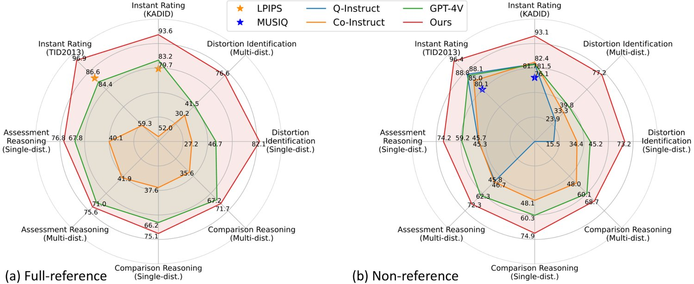
图 1：性能比较。我们的模型在广泛的任务上超越了先前工作，包括 Q-Instruct [5]、Co-Instruct [6] 与专有的 GPT-4V [2]，覆盖全参考与无参考两种设定。LPIPS [10] 与 MUSIQ [11] 等传统的基于分数的 IQA 方法不具备语言能力，因而只能用于即时评分任务。Q-Instruct 只在单图输入任务上被测试。
To address these challenges, we propose a multi-functional IQA model to handle various image quality assessment tasks. We categorize these tasks into two types, as shown in Fig. 2. (a) Single-image assessment aims to evaluate the quality of a single image by identifying distortions (e.g., “blur” in Fig. 2a top). It can also analyze the distortions’ impacts on contents (e.g., blur “affecting the definition of mountains and trees” in Fig. 2a bottom). (b) Paired-image comparison focuses on comparing the quality of two distorted images based on the clarity, colorfulness, and sharpness of presented contents. For example, in Fig. 2b, despite reduced contrast, “Image A maintains more scene integrity”, as “Image B’s serious noise level is more detrimental”. We omit multi-image comparison since it is an easy extension of a pairwise one [12]. Each type includes basic brief sub-tasks for fundamental assessments and detailed sub-tasks to enhance reasoning abilities. Moreover, the model supports both full-reference and non-reference settings, making it adaptable to diverse scenarios.
为应对这些挑战，我们提出一个多功能的 IQA 模型，以处理各类图像质量评价任务。我们把这些任务归为两类，如图 2 所示。（a）单图评价旨在评估单张图像的质量，方法是识别失真（例如图 2a 上方的「模糊」）；它也可以分析这些失真对内容的影响（例如图 2a 下方模糊「影响了山与树的清晰度」）。（b）双图比较聚焦于依据所呈现内容的清晰度、色彩丰富度与锐度来比较两张失真图像的质量。例如在图 2b 中，尽管对比度有所降低，「图像 A 保留了更完整的场景」，因为「图像 B 严重的噪声水平危害更大」。我们略去多图比较，因为它可以轻易地由成对比较扩展而来 [12]。每一类都包含用于基础评价的简要子任务，以及用于增强推理能力的详细子任务。此外，模型同时支持全参考与无参考设定，因而能适应多样化的场景。
Under the multi-functional task paradigm, we construct a new large-scale dataset, DQ-495K, for comprehensive and accurate training and evaluation. First, for diverse distortion, we design and implement 35 types of distortions, each with 5 levels. Second, to enhance the label quality, we inform GPT-4V of the low-level ground truths (e.g., distortions) to leverage its strong high-level perception and language abilities, while avoiding its sub-optimal IQA capabilities. Third, to increase the dataset scale, we scale up the data amount to 495K under the brief-detail combined framework [8]. Also, our dataset is suitable for both full-reference and non-reference settings.
在这一多功能任务范式下，我们构建了一个新的大规模数据集 DQ-495K，用于全面而准确的训练与评估。第一，为实现失真多样性，我们设计并实现了 35 种失真，每种含 5 个等级。第二，为提升标签质量，我们把底层真值（如失真信息）告知 GPT-4V，以利用其强大的高层感知与语言能力，同时规避其在 IQA 上次优的表现。第三，为扩大数据集规模，我们在简要—详细联合框架 [8] 下把数据量扩展到 495K。此外，我们的数据集同时适用于全参考与无参考设定。
With the above collected DQ-495K dataset, we then train an enhanced Depicted image Quality Assessment VLM model (DepictQA-Wild). During training, the original image resolution is retained, leading to a better quality perception regarding resolution. Furthermore, we estimate the confidence of responses from key tokens, providing vital auxiliary information, especially for filtering low-quality responses.
基于上述采集到的 DQ-495K 数据集，我们训练了一个增强的 Depicted image Quality Assessment VLM 模型（DepictQA-Wild）。训练过程中保留原始图像分辨率，从而获得更好的分辨率相关质量感知。此外，我们从关键词元估计响应的置信度，提供重要的辅助信息，尤其有助于过滤低质量响应。
The performance of DepictQA-Wild is evaluated in Fig. 1 and Sec. V. In brief tasks, our model surpasses general VLMs, IQA-specific VLMs, and score-based IQA methods by a large margin. For example, we achieve 95.9% in non-reference comparison on TID2013 dataset, remarkably surpassing Co-Instruct (85.0%) and GPT-4V (88.1%). In detailed tasks, our model also excels, e.g., recording 74.9% in non-reference comparison reasoning, compared to 48.1% for Co-Instruct and 60.3% for GPT-4V. At last, experiments on real-world applications including assessing web-downloaded images and comparing model-restored images further demonstrate our superiority. We hope that our multi-functional model could serve as a stepping stone towards a unified VLM-based IQA model. Although not yet fully realized, our method showcases the potential of VLM-based IQA models.
DepictQA-Wild 的性能在图 1 与第 V 节中得到评估。在简要任务上，我们的模型以大幅优势超越通用 VLM、IQA 专用 VLM 以及基于分数的 IQA 方法。例如，我们在 TID2013 数据集的无参考比较上达到 95.9%，显著超过 Co-Instruct（85.0%）与 GPT-4V（88.1%）。在详细任务上，我们的模型同样出色，例如在无参考比较推理上取得 74.9%，而 Co-Instruct 为 48.1%、GPT-4V 为 60.3%。最后，在评价网络下载图像与比较模型复原图像等真实应用上的实验，进一步证明了我们的优越性。我们希望这个多功能模型能成为迈向统一的基于 VLM 的 IQA 模型的垫脚石。尽管尚未完全实现，我们的方法展示了基于 VLM 的 IQA 模型的潜力。
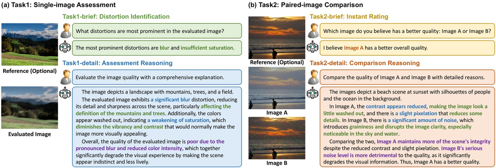
图 2：我们的任务范式与定性结果示意。DepictQA-Wild 聚焦两项主要任务——单图评价与双图比较，覆盖全参考与无参考两种设定。每项任务包含一个侧重基础 IQA 能力的简要子任务，以及一个培养推理能力的详细子任务。更多定性结果见补充材料图 S5 与 S7。
Score-based IQA methods. Traditional IQA methods rely on scores to assess image quality and can be divided into full-reference and non-reference methods. (a) Full-reference methods compute a similarity score between a distorted image and a high-quality reference. Early works rely on human-designed metrics such as image information [13], structural similarity [14], phase congruency with gradient magnitude [15], etc. The rapid advancement of deep learning has also inspired learning-based IQA methods that measure image quality through data-driven training. Pioneered by PieAPP [16] and LPIPS [10], data-driven approaches [17, 18, 19, 20, 21, 22, 23] have spurred innovations in IQA, exhibiting high consistency with human judgments. (b) Non-reference methods directly regress a quality score without a reference image. Initially, human-designed natural image statistics are adopted [24, 25, 26, 27, 28, 29, 30]. Subsequently, deep-learning-based methods [31, 32, 33, 34, 35, 36, 37] replace hand-crafted statistics by learning quality priors from extensive data. Recent works focus on enhancing performance by introducing multi-scale features [11], CLIP pre-training [38], multi-dimension attention [39], continual learning [40], multitask learning [41], and so on. However, as discussed in [8], score-based IQA methods limit themselves in complex analyses and multi-aspect weighing of IQA, since the information provided by a single score is far from sufficient.
基于分数的 IQA 方法。传统 IQA 方法依靠分数来评价图像质量，可分为全参考与无参考两类。（a）全参考方法计算失真图像与高质量参考图像之间的相似度分数。早期工作依赖人工设计的度量，例如图像信息 [13]、结构相似度 [14]、相位一致性与梯度幅值 [15] 等。深度学习的快速发展也催生了通过数据驱动训练来度量图像质量的基于学习的 IQA 方法。由 PieAPP [16] 与 LPIPS [10] 开创，数据驱动方法 [17, 18, 19, 20, 21, 22, 23] 推动了 IQA 的创新，并展现出与人类判断高度一致的特性。（b）无参考方法在没有参考图像的情况下直接回归质量分数。最初采用人工设计的自然图像统计量 [24, 25, 26, 27, 28, 29, 30]；随后，基于深度学习的方法 [31, 32, 33, 34, 35, 36, 37] 用从大量数据中学习到的质量先验取代了手工统计量。近期工作则致力于通过引入多尺度特征 [11]、CLIP 预训练 [38]、多维注意力 [39]、持续学习 [40]、多任务学习 [41] 等来提升性能。然而，正如 [8] 所讨论的，基于分数的 IQA 方法在复杂分析与多维度权衡上自我设限，因为单一分数所提供的信息远远不够。
Vision Language Models (VLMs) incorporate visual modality into Large Language Models (LLMs) [42, 43, 44], aiming to leverage their emergent ability to achieve general visual ability. These VLMs [45, 46, 1, 2, 47, 48, 49, 50, 51, 52] have demonstrated a general visual ability and can tackle a variety of multi-modality tasks, including image captioning [53, 54, 55], visual question answering [56, 57, 58], document understanding [59, 60, 61], etc. Although proficient in these high-level visual perception tasks, we demonstrate in Sec. V that general-purpose VLMs still struggle with IQA tasks.
视觉语言模型（VLM）把视觉模态引入大语言模型（LLM）[42, 43, 44]，试图借助其涌现能力实现通用视觉能力。这些 VLM [45, 46, 1, 2, 47, 48, 49, 50, 51, 52] 已展现出通用视觉能力，能应对多种多模态任务，包括图像描述 [53, 54, 55]、视觉问答 [56, 57, 58]、文档理解 [59, 60, 61] 等。尽管它们在这些高层视觉感知任务上表现熟练，我们在第 V 节中表明，通用 VLM 在 IQA 任务上仍然吃力。
VLM-based IQA methods aim to achieve better alignment with human perception leveraging the power of VLMs [7]. Q-Bench [4] establishes a comprehensive benchmark for evaluating general-purpose VLMs in low-level perception tasks. [62] evaluates various VLMs on the widely-adopted two-alternative forced choice (2AFC) task. Q-Instruct [5] enhances the low-level perception ability of VLMs by introducing a large-scale dataset. Q-Align [63] and DeQA-Score [64] employ discrete text-defined levels for more accurate quality score regression. Co-Instruct [6] concentrates on the quality comparison among multiple images. DepictQA [8] performs quality description, quality comparison, and comparison reasoning in the full-reference setting. Recently, inspired by the success of DeepSeek-R1 [65], Q-Insight [66] first introduces reasoning-induced quality regression by employing the GRPO reinforcement learning method [67] for IQA. Building upon this idea, VisualQuality-R1 [68] further improves IQA performance by incorporating pairwise ranking relationships into the reinforcement learning objective. Moreover, Q-Ponder [69] proposes a unified two-stage training framework, consisting of a cold-start pretraining phase followed by reinforcement learning-based fine-tuning. Nonetheless, as highlighted in Sec. I, most of these methods focus on specific aspects of IQA tasks, diverging from the original intents of VLMs’ universality and practical usage requirements.
基于 VLM 的 IQA 方法旨在借助 VLM 的能力更好地与人类感知对齐 [7]。Q-Bench [4] 建立了一个综合基准，用于评估通用 VLM 在底层感知任务上的表现。[62] 在广泛采用的二选一强制选择（2AFC）任务上评估了各种 VLM。Q-Instruct [5] 通过引入大规模数据集来增强 VLM 的底层感知能力。Q-Align [63] 与 DeQA-Score [64] 采用离散的文本定义等级，以实现更准确的质量分数回归。Co-Instruct [6] 关注多张图像之间的质量比较。DepictQA [8] 在全参考设定下执行质量描述、质量比较与比较推理。近期，受 DeepSeek-R1 [65] 成功的启发，Q-Insight [66] 首次引入推理驱动的质量回归，将 GRPO 强化学习方法 [67] 用于 IQA。在这一思路之上，VisualQuality-R1 [68] 通过把成对排序关系纳入强化学习目标，进一步提升了 IQA 性能。此外，Q-Ponder [69] 提出了一个统一的两阶段训练框架，由冷启动预训练阶段与基于强化学习的微调阶段组成。尽管如此，正如第 I 节所强调的，这些方法大多只关注 IQA 任务的特定方面，偏离了 VLM 通用性与实际使用需求的初衷。
Explainable AI for computer vision. Our descriptive IQA model could be seen as an explainable IQA approach, as it provides a human-understandable reasoning process. Recent studies in computer vision have increasingly emphasized explainability to enhance transparency and trust in deep models [70, 71, 72, 73, 74]. Several efforts have also been made to design explainable IQA models [75, 76, 77]. However, most existing explainable IQA methods primarily rely on visualization-based interpretability (i.e., saliency or attribution maps) to highlight influential regions, which can qualitatively indicate what the model attends to but fails to fully capture the underlying reasoning or perceptual logic behind the score assignment. Recently, TIFA [78] leveraged language-based question answering to evaluate text-to-image results, demonstrating that linguistic explanations can serve as an intuitive bridge between human judgment and model understanding. Inspired by this, we take a further step to construct a descriptive IQA model that provides natural-language rationales to describe perceptual factors influencing the assessment.
面向计算机视觉的可解释 AI。我们的描述式 IQA 模型可被视为一种可解释的 IQA 方法，因为它提供了人类可理解的推理过程。计算机视觉领域的近期研究日益强调可解释性，以提升深度模型的透明度与可信度 [70, 71, 72, 73, 74]。也有若干工作致力于设计可解释的 IQA 模型 [75, 76, 77]。然而，多数现有的可解释 IQA 方法主要依赖基于可视化的可解释性（即显著性图或归因图）来突出有影响的区域，这只能定性地指示模型关注了什么，却无法完整刻画分数赋值背后的推理或感知逻辑。近期，TIFA [78] 利用基于语言的问答来评估文本到图像的生成结果，表明语言解释可以充当人类判断与模型理解之间的直观桥梁。受此启发，我们进一步构建了一个描述式 IQA 模型，提供自然语言理由来描述影响评价的感知因素。
As highlighted in the introduction, there are various application scenarios for IQA models. First, the evaluation objective can be either single-image assessment or paired-image comparison. The former is useful to rate a web-downloaded image, while the latter suits comparing images processed by two different algorithms. Second, the reference setting may be full-reference or non-reference. For example, image restoration requires assessments based on references, while image generation needs non-reference evaluations. Third, the response could be either brief or detailed. Brief responses suit well-targeted tasks (e.g., comparison without reasons), while detailed responses enhance interpretability and human interaction. To cater to such diverse scenarios, a practical IQA method should be multi-functional. Therefore, we aim to establish such a multi-functional task paradigm for VLM-based IQA research. As shown in Fig. 2, we focus on two tasks, each containing both brief and detailed sub-tasks, and supporting both full-reference and non-reference settings.
如引言所强调的，IQA 模型存在多种应用场景。第一，评价对象可以是单图评价或双图比较：前者适用于给网络下载的图像打分，后者适合比较由两种不同算法处理的图像。第二，参考设定可以是全参考或无参考：例如图像复原需要基于参考的评价，而图像生成需要无参考评价。第三，响应可以是简要的或详细的：简要响应适合目标明确的任务（如不带理由的比较），详细响应则增强可解释性与人机交互。为适应这类多样化场景，一个实用的 IQA 方法应当是多功能的。因此，我们旨在为基于 VLM 的 IQA 研究建立这样一种多功能任务范式。如图 2 所示，我们聚焦两项任务，每项都包含简要与详细子任务，并同时支持全参考与无参考设定。
Task1: single-image assessment. (a) Brief sub-task: distortion identification. Given a distorted image, the model should identify the most obvious distortions. (b) Detailed sub-task: assessment reasoning. In addition to identifying distortions, the model should also describe how these distortions affect the perception of image contents and the overall image quality.
• 任务 1：单图评价。（a）简要子任务：失真识别。给定一张失真图像，模型应识别出最明显的失真。（b）详细子任务：评价推理。除识别失真外，模型还应描述这些失真如何影响对图像内容的感知以及整体图像质量。
Task2: paired-image comparison. (a) Brief sub-task: instant rating. Given two distorted images, the model should find the image with better quality. (b) Detailed sub-task: comparison reasoning. Building upon the comparison results, the model should first compare the content loss caused by distortions in the two images, then weigh different aspects to draw inferences, and finally justify its comparison results. Note that we omit the multi-image (2) comparison since it can be achieved easily as the extension of paired case [12].
• 任务 2：双图比较。（a）简要子任务：即时评分。给定两张失真图像，模型应找出质量更好的一张。（b）详细子任务：比较推理。在比较结果的基础上，模型应先比较两图中由失真造成的内容损失，再权衡不同方面以作出推断，最后论证其比较结果。需要说明的是，我们略去多图（2）比较，因为它可以轻易地作为成对情形的扩展来实现 [12]。
Compared with previous works, our design unifies various tasks, response types, and reference settings into a multi-functional paradigm. In contrast, Q-Instruct [5] focuses on non-reference single-image assessment, Co-Instruct [6] targets comparison among multiple images in the non-reference setting, and DepictQA [8] primarily addresses the full-reference setting. Although one can achieve unified IQA by combining these task-specific IQA models, it is impractical due to the significant increase in network parameters, considering that current VLMs are already quite large.
与先前工作相比，我们的设计把多种任务、响应类型与参考设定统一到一个多功能范式之中。相比之下，Q-Instruct [5] 聚焦无参考单图评价，Co-Instruct [6] 面向无参考设定下多张图像之间的比较，而 DepictQA [8] 主要处理全参考设定。虽然可以通过组合这些任务专用 IQA 模型来实现统一的 IQA，但考虑到当前 VLM 本身已经相当庞大，网络参数的大幅增加使这种做法并不现实。
表 I：我们的失真库概览，共 12 个父类与 35 个子类。
| Super-category | Blur | Noise | Compression | Brighten | Darken | Contrast Strengthen | Contrast Weaken | Saturate Strengthen | Saturate Weaken | Over-sharpen | Pixelate | Quantize |
| # Sub-category | 6 | 6 | 2 | 4 | 4 | 2 | 2 | 2 | 2 | 1 | 1 | 3 |
Existing IQA datasets (e.g., BAPPS [10], PieAPP [16]) usually introduce distortions (e.g., noise, blur) into high-quality reference images to create distorted images for evaluation. However, these datasets do not publicly release the distortion information of each image, and their distortions only cover limited scenes. Therefore, we aim to develop a comprehensive large-scale distortion library.
现有的 IQA 数据集（如 BAPPS [10]、PieAPP [16]）通常向高质量参考图像中引入失真（如噪声、模糊）以构造用于评估的失真图像。然而这些数据集并未公开每张图像的失真信息，且其失真只覆盖有限的场景。因此，我们旨在构建一个全面的大规模失真库。
Distortion generation. Our distortion system comprises 12 super-categories in total, with each super-category consisting of multiple sub-categories. For instance, the “blur” category encompasses “Gaussian blur”, “motion blur”, “lens blur”, etc. In total, there are 35 sub-categories. For each sub-category, there are 5 severity levels: “slight”, “moderate”, “obvious”, “serious”, and “catastrophic”. A summary is illustrated in Tab. I. Considering the need to assess high-quality images as well, we retain the original image without any distortions in 5% proportion. See details in Supp. Mat.
失真生成。我们的失真系统共包含 12 个父类，每个父类由若干子类构成。例如，「模糊」类涵盖「高斯模糊」「运动模糊」「镜头模糊」等，共计 35 个子类。对每个子类，设有 5 个严重等级：「轻微」「中等」「明显」「严重」与「灾难性」。表 I 给出了概览。考虑到也需要评价高质量图像，我们以 5% 的比例保留未加任何失真的原始图像。细节见补充材料。
Multi-distortion setups. In practical usage, multiple distortions may occur simultaneously on the same image. While a simple way to simulate them is to add multiple distortions recursively, real-world scenarios are more complex. First, one distortion may weaken another, such as “brighten” weakens “darken”, “blur” weakens “over-sharpen”. Second, certain distortions exhibit similar visual results, such as “pixelate” looks similar to “blur”, making it challenging to identify both if they are applied simultaneously. We also observe that humans can identify at most two distortions when three or more are applied, as illustrated in Fig. S2 of Supp. Mat. Hence, we limit the distortion number to two and manually review all possible combinations to exclude contradictory or similar combinations. See details of multi-distortion setting in Tab. S1 and Sec. -A of Supp. Mat.
多重失真设定。在实际使用中，同一张图像上可能同时出现多种失真。虽然一种简单的模拟方式是递归地叠加多种失真，但真实场景要复杂得多。第一，一种失真可能削弱另一种，例如「变亮」削弱「变暗」、「模糊」削弱「过锐化」。第二，某些失真呈现相似的视觉结果，例如「像素化」看起来与「模糊」相似，若同时施加则难以把两者都识别出来。我们还观察到：当施加三种或更多失真时，人类最多只能识别出两种，如补充材料图 S2 所示。因此，我们把失真数量限制为两种，并人工审核所有可能的组合，以排除相互矛盾或相似的搭配。多重失真设定的细节见补充材料表 S1 与 -A 节。
High-quality and large-scale datasets are crucial for training VLMs. Following [1, 49], training VLMs requires {images, question, response} triplets, where “images” are the ones to be evaluated, “question” describes the task, and “response” is the ground truth answer. In this section, we detail the construction of our dataset from the selection of images and the collection of questions and responses.
高质量、大规模的数据集对训练 VLM 至关重要。遵循 [1, 49]，训练 VLM 需要 {图像, 问题, 响应} 三元组，其中「图像」是被评价的对象，「问题」描述任务，「响应」是真值答案。本节从图像的选取以及问题与响应的采集两方面详述我们数据集的构建过程。
Image collection. Typical IQA datasets involve two types of images: high-quality reference images and distorted images to be evaluated. Generating distorted images is easy given our comprehensive distortion library introduced in Sec. III-B. Existing studies often collect a large number of distorted images from a small number of references [12, 9]. However, the semantic richness of images is also crucial for VLM training. Therefore, we primarily source reference images from the KADIS-700K dataset [79], which offers 140K pristine reference images from diverse natural and daily scenes. We also leverage other IQA datasets for their convenience to generate responses (details are below).
图像采集。典型的 IQA 数据集涉及两类图像：高质量参考图像与待评价的失真图像。借助第 III-B 节介绍的全面失真库，生成失真图像很容易。现有研究常常从少量参考图像中生成大量失真图像 [12, 9]。然而，图像的语义丰富性对 VLM 训练同样至关重要。因此，我们主要从 KADIS-700K 数据集 [79] 获取参考图像，它提供了来自多样自然与日常场景的 140K 张原始参考图像。我们也利用其他 IQA 数据集，以方便地生成响应（细节见下文）。
Question collection. Humans often express similar questions using different sentences, necessitating model robustness to various questions. For each task, we initially prompt GPT-4 [43] to generate 50 candidate questions. Then, we manually eliminate ambiguous and repetitive ones and correct inaccurate ones, creating a set of 20 questions. We randomly sample these questions during training and testing to form the data pair.
问题采集。人们常常用不同的句子表达相似的问题，这就要求模型对各类问题具备鲁棒性。对每项任务，我们首先提示 GPT-4 [43] 生成 50 个候选问题，然后人工剔除含糊与重复的表述、修正不准确的表述，形成一组 20 个问题。在训练与测试时，我们从中随机采样以构成数据对。
Response collection. We employ two response types as shown in Fig. 3. The first comprises brief templated responses that are easy to produce, where we emphasize the quantity to bring robust fundamental skills. The second consists of detailed responses, where we emphasize the quality to enhance the advanced reasoning abilities. Existing methods to collect detailed responses mainly rely on human annotation [5, 8] and GPT-4V generation [6]. However, human annotation can be biased and vary in quality when annotators are untrained or tired [8]. Also, GPT-4V is not fully reliable since its IQA performance is still unsatisfactory as evidenced in Sec. V.
响应采集。我们采用图 3 所示的两种响应类型。第一种是易于生成的简要模板化响应，我们侧重其数量，以带来稳健的基础能力。第二种是详细响应，我们侧重其质量，以增强高级推理能力。现有采集详细响应的方法主要依赖人工标注 [5, 8] 与 GPT-4V 生成 [6]。然而，当标注者未经训练或疲劳时，人工标注可能存在偏差且质量参差 [8]；GPT-4V 也并不完全可靠，因为如第 V 节所示，其在 IQA 上的表现仍不尽如人意。
We rethink the key aspects of our desired responses and GPT-4V’s corresponding abilities, introducing GT-informed generation by prompting the Ground Truth (GT) details to enhance GPT-4V’s generation. Specifically, a high-quality detailed response should contain image contents, key distortions, the impacts of distortions on contents, and conclusions. While GPT-4V excels at identifying contents and analyzing impacts, it struggles with distortion identification and quality comparison, as shown in Sec. V. To compensate for that, we directly provide it with explicit GT information. The response generation for each task is detailed subsequently.
我们重新审视了所期望响应的关键要素与 GPT-4V 相应的能力，提出 GT 引导生成——通过向 GPT-4V 提示真值（GT）细节来提升其生成质量。具体地，一条高质量的详细响应应当包含图像内容、关键失真、失真对内容的影响以及结论。虽然 GPT-4V 擅长识别内容与分析影响，但如第 V 节所示，它在失真识别与质量比较上表现吃力。为弥补这一点，我们直接向其提供显式的 GT 信息。各任务的响应生成详见下文。
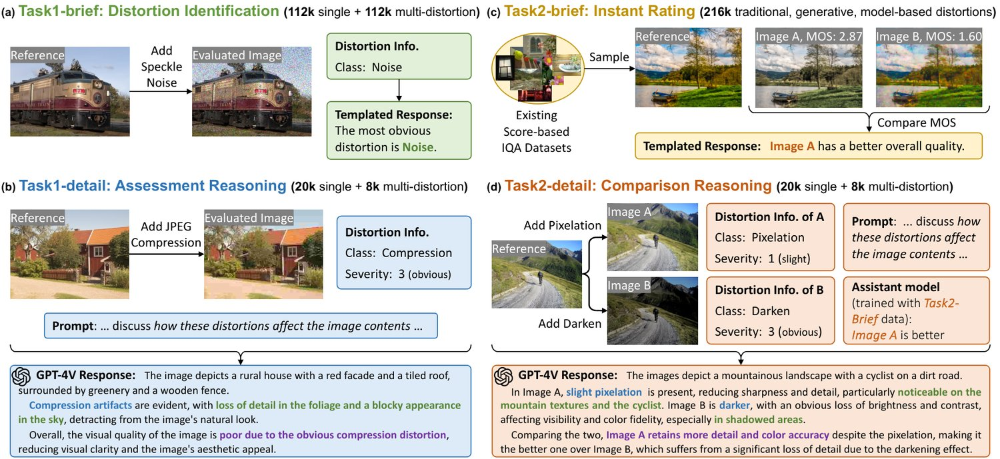
图 3：DQ-495K 数据集的构建。对失真识别，利用失真信息生成模板化响应。在即时评分中，我们从现有数据集中采样图像并比较平均意见分数（MOS）以确定更优图像，从而生成模板化响应。对评价推理与比较推理任务，我们向 GPT-4V 提供被评价的图像与真值（GT）细节（即失真信息、来自辅助模型的比较结果），以促进详细而准确的响应生成，称为 GT 引导生成。这些附加信息至关重要，因为 GPT-4V 无法准确地自行产出它们。
Task1-brief: distortion identification. As shown in Fig. 3a, we first establish a response pool containing 20 templates with unspecified distortions. Next, we add distortions into the reference to create its distorted counterpart and populate a sampled template with the specific distortions as the response. For streamlined evaluation, we sample half of the questions and append the short answer prompt: “Answer the question using a single word or phrase.” Correspondingly, the response will be a single phrase, like “noise”, specifying the distortions.
任务 1-简要：失真识别。如图 3a 所示，我们首先建立一个包含 20 个未指定失真的模板的响应池。接着，我们向参考图像加入失真以生成其失真对应物，并用具体失真填充一个采样到的模板作为响应。为便于评估，我们对一半的问题附加短答案提示：「用一个单词或短语回答问题。」相应地，响应将是一个单独的短语，例如「噪声」，用以指明失真。
Task1-detail: assessment reasoning. Given the reference image, we initially introduce distortions to corrupt the reference. Then, GPT-4V is input with both two images and the distortion information, and requested to assess the quality of the distorted image, as illustrated in Fig. 3b. We instruct GPT-4V to respond from three dimensions: contents, distortions along with their impacts on contents, and overall quality. Prior works [5, 6] mainly focus on low-level properties, while we consider how these distortions influence the display of high-level contents.
任务 1-详细：评价推理。给定参考图像，我们首先引入失真来破坏参考图像。然后，把两张图像连同失真信息一并输入 GPT-4V，要求其评价失真图像的质量，如图 3b 所示。我们指示 GPT-4V 从三个维度作答：内容、失真及其对内容的影响、整体质量。先前工作 [5, 6] 主要关注底层属性，而我们进一步考虑这些失真如何影响高层内容的呈现。
Task2-brief: instant rating. We begin by sampling a reference image and its two distorted versions from existing IQA datasets, and then compare the Mean Opinion Score (MOS) to determine the better one, as shown in Fig. 3c. Similar to distortion identification, we assemble a response pool of 20 templates to convert the comparison results into textual responses, and append the short answer prompt for the convenience of evaluation. We select three IQA datasets for training, including BAPPS [10], KADID-10K [80], and PIPAL [12], to cover a diverse range of reference images.
任务 2-简要：即时评分。我们首先从现有 IQA 数据集中采样一张参考图像及其两个失真版本，然后比较平均意见分数（MOS）以确定更优者，如图 3c 所示。与失真识别类似，我们组建一个含 20 个模板的响应池，把比较结果转换为文本响应，并附加短答案提示以便于评估。我们选取三个 IQA 数据集用于训练，包括 BAPPS [10]、KADID-10K [80] 与 PIPAL [12]，以覆盖多样的参考图像。
Task2-detail: comparison reasoning. As depicted in Fig. 3d, given a high-quality image, we randomly apply distortions to produce two distorted images. We first train an assistant model using the large-scale instant rating data to predict the comparison results. Note that GPT-4V does not perform well on the quality comparison task, as shown in our experiments in Sec. V-B and Tab. IX, and thus we train our own comparison model. Then, similar to assessment reasoning, we inform GPT-4V of the three images, distortion information, and comparison results to generate detailed responses.
任务 2-详细：比较推理。如图 3d 所示，给定一张高质量图像，我们随机施加失真以产生两张失真图像。我们首先用大规模即时评分数据训练一个辅助模型来预测比较结果。需要说明的是，如我们在第 V-B 节与表 IX 中的实验所示，GPT-4V 在质量比较任务上表现不佳，因此我们训练自己的比较模型。随后，与评价推理类似，我们把三张图像、失真信息与比较结果告知 GPT-4V，以生成详细的响应。
Setup of non-reference setting. Our dataset accommodates both full-reference and non-reference settings. However, even for humans, identifying subtle distortions (e.g., minor brightness adjustments) without a reference is challenging. Thus, in the non-reference setting, we selectively remove samples with “slight” severity on some specific distortions, including “brighten”, “darken”, “contrast weaken”, “contrast strengthen”, “saturate weaken”, “saturate strengthen”, “quantize”, and “over-sharpen”.
无参考设定的设置。我们的数据集同时容纳全参考与无参考设定。然而，即便对人类而言，在没有参考的情况下识别细微失真（例如轻微的亮度调整）也很困难。因此，在无参考设定下，我们有选择地移除某些特定失真上严重等级为「轻微」的样本，包括「变亮」「变暗」「对比度减弱」「对比度增强」「饱和度减弱」「饱和度增强」「量化」与「过锐化」。
表 II：我们的 DQ-495K 数据集的统计信息。
(a) Number of samples. All tasks except instant rating are displayed in the single-distortion / multi-distortion format. Task1-brief Task1-detail Task2-brief Task2-detail Distortion Identification Assessment Reasoning Instant Rating Comparison Reasoning Train 112,000 / 112,000 19,829 / 7,981 215,676 19,809 / 7,958 Test 28,000 / 28,000 200 / 100 41,120 200 / 100
(a) 样本数量。除即时评分外的所有任务均以单失真 / 多失真的格式呈现。任务1-简要 任务1-详细 任务2-简要 任务2-详细 失真识别 评价推理 即时评分 比较推理 训练 112,000 / 112,000 19,829 / 7,981 215,676 19,809 / 7,958 测试 28,000 / 28,000 200 / 100 41,120 200 / 100
(b) Response length reported as word count / string length. Distortion Identification Assessment Reasoning Instant Rating Comparison Reasoning Single-dist. 10.36 / 69.81 64.37 / 430.23 9.30 / 52.02 93.20 / 604.97 Multi-dist. 12.84 / 88.67 87.31 / 588.44 114.04 / 740.68
(b) 响应长度，以词数 / 字符串长度报告。失真识别 评价推理 即时评分 比较推理 单失真 10.36 / 69.81 64.37 / 430.23 9.30 / 52.02 93.20 / 604.97 多失真 12.84 / 88.67 87.31 / 588.44 114.04 / 740.68
Dataset statistics are given in Tab. IIa. Our training set contains 439,676 brief samples and 55,577 detailed samples. For instant rating, the training set includes BAPPS, KADID, and PIPAL, while the validation set consists of BAPPS, KADID, PIPAL, TID2013 [9], LIVE-MD [81], and MDID2013 [82]. To ensure there is no intersection between training and validation sets for those overlapped datasets, the original splits are kept. For detailed tasks, all samples in the validation set have been carefully checked by humans.
数据集统计信息见表 IIa。我们的训练集包含 439,676 个简要样本与 55,577 个详细样本。对即时评分，训练集包含 BAPPS、KADID 与 PIPAL，而验证集由 BAPPS、KADID、PIPAL、TID2013 [9]、LIVE-MD [81] 与 MDID2013 [82] 组成。为保证在那些存在重叠的数据集上训练集与验证集不相交，我们保留了原始的划分。对详细任务，验证集中的全部样本都经过人工仔细核对。
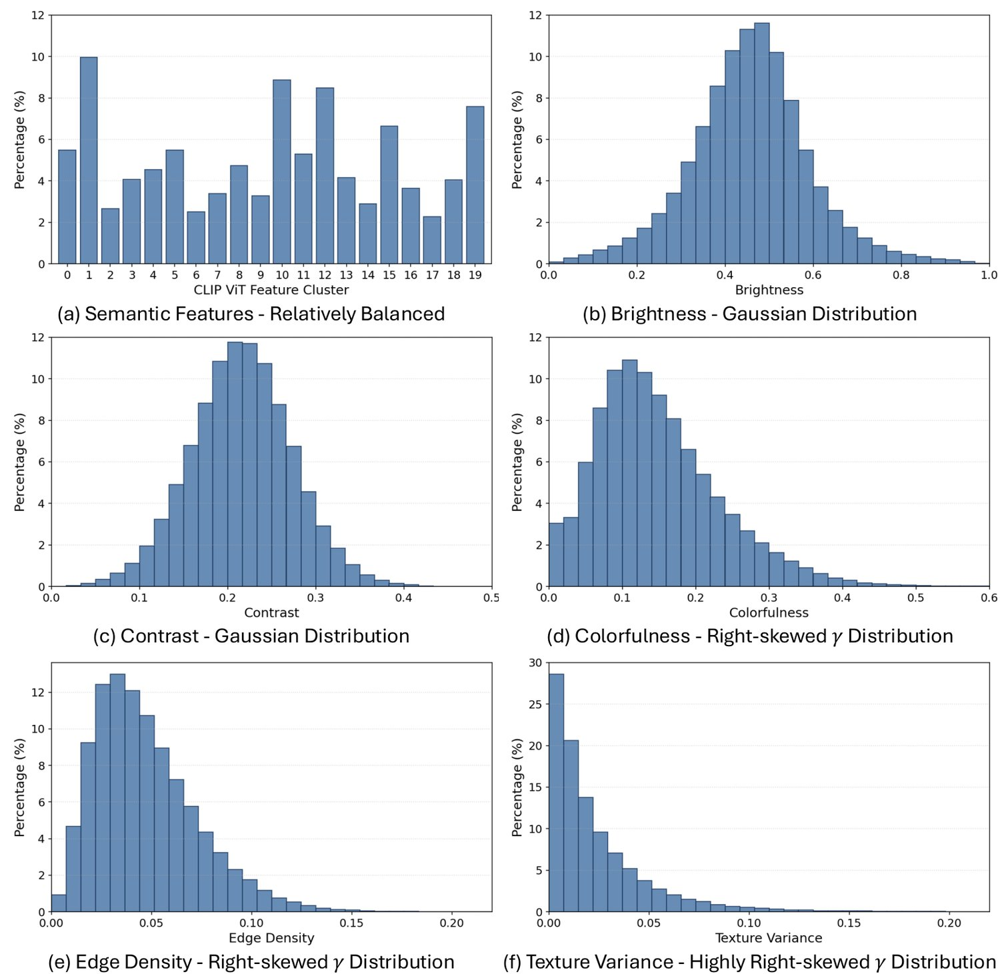
图 4：数据集中所有图像在以下方面的统计：(a) 语义特征，(b) 亮度，(c) 对比度，(d) 色彩丰富度，(e) 边缘密度，(f) 纹理方差。
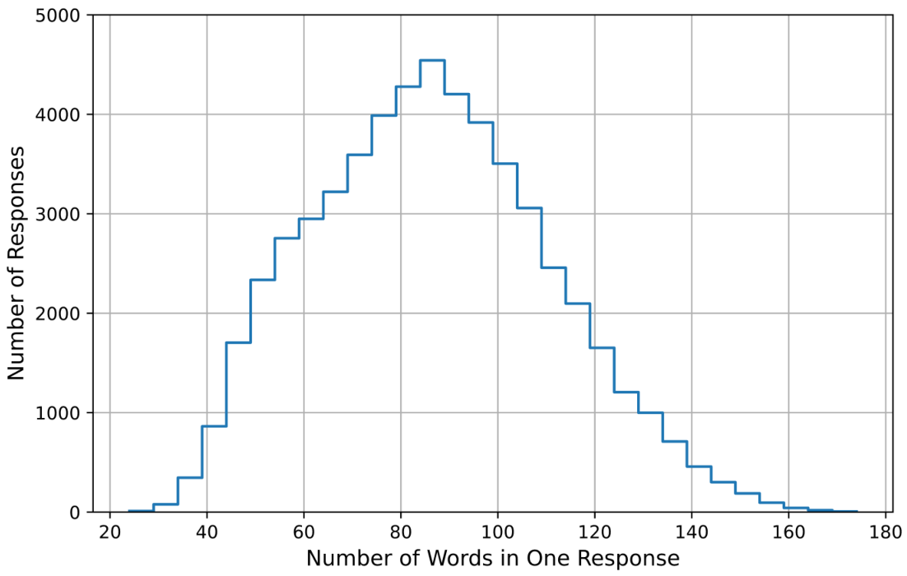
图 5：详细响应的词长分布。
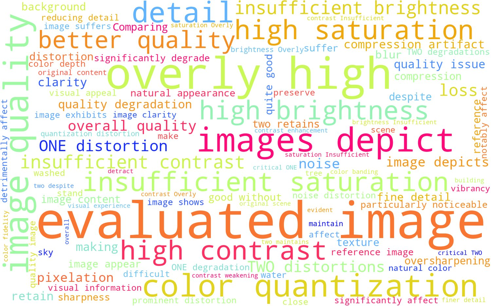
图 6：所有详细响应的词云图。
Image analysis. We analyze six statistical features to examine the image distributions. First, we use CLIP [83] ViT to extract semantic features and apply K-Means clustering with . As shown in Fig. 4a, the samples are relatively balanced across clusters. Second, the brightness (Fig. 4b) and contrast (Fig. 4c) approximately follow Gaussian distributions, consistent with natural image statistics [84]. Third, as in Fig. 4de, colorfulness and edge density exhibit right-skewed heavy-tailed distributions, which are characteristics of natural scenes [85, 86]. Finally, texture variance (Fig. 4f) follows a highly right-skewed distribution, aligning with prior findings [87]. These results confirm that our dataset maintains natural image statistics in semantic and low-level dimensions.
图像分析。我们分析六项统计特征以考察图像分布。第一，我们使用 CLIP [83] ViT 提取语义特征，并以 进行 K-Means 聚类。如图 4a 所示，样本在各簇之间相对均衡。第二，亮度（图 4b）与对比度（图 4c）近似服从高斯分布，与自然的图像统计一致 [84]。第三，如图 4de 所示，色彩丰富度与边缘密度呈现右偏的重尾分布，这是自然场景的特征 [85, 86]。最后，纹理方差（图 4f）遵循高度右偏的 分布，与此前的发现一致 [87]。这些结果证实，我们的数据集在语义与底层维度上都保持了自然的图像统计特性。
Text analysis. First, we examine the response length statistics of our DQ-495K dataset in Tab. IIb, including both word count and character length. For the instant rating task, single- and multi-distortion cases are not distinguished. We further present the word-length distribution of detailed reasoning responses in Fig. 6. The results show a near-Gaussian distribution centered around approximately 90 words, indicating that most responses are concise yet sufficiently descriptive. Second, Fig. 6 illustrates the word cloud of our DQ-495K dataset. We manually remove “Image A” and “Image B”, as they are constant proper nouns across all texts. The most frequent terms (e.g., “overly high”, “color quantization”, “high contrast”, “high saturation”, and “detail”) are closely related to low-level image attributes and visual quality.
文本分析。第一，我们在表 IIb 中考察 DQ-495K 数据集的响应长度统计，包括词数与字符长度。对即时评分任务，不区分单失真与多失真情形。我们还在图 6 中给出详细推理响应的词长分布。结果显示其近似服从高斯分布，中心约为 90 个词，说明多数响应既简洁又具备充分的描述性。第二，图 6 展示了 DQ-495K 数据集的词云。我们人工移除了「Image A」与「Image B」，因为它们在所有文本中都是固定专有名词。出现频率最高的词（如「过高」「色彩量化」「高对比度」「高饱和度」与「细节」）都与底层图像属性和视觉质量密切相关。
Model Architecture. DepictQA-Wild primarily adopts the architecture from LLaVA-1.6 [88] and mPLUG-Owl2 [3], structured as follows. Specifically, the input images and the question texts are first tokenized, then fused, finally processed by the Large Language Model (LLM) for response generation. (1) Tokenizing input images and question texts. We use a frozen CLIP pre-trained ViT-L/14 [83] as the image encoder to convert the input images into visual tokens. The question texts are tokenized into textual tokens using the SentencePiece tokenizer [89]. To bridge the different embedding spaces of visual and textual tokens, we implement a trainable image abstractor, which is a four-layer transformer network, to map visual tokens into the textual space following [3]. The abstractor can also significantly reduce the number of vision tokens, relieving the computing pressure. (2) Token fusion. We integrate the visual tokens into pre-defined positions within the textual tokens as token fusion. (3) Response generation using LLM. The fused tokens are fed into LLM to generate the final response. Here we mainly conduct experiments with Vicuna-v1.5-7B. Despite their capabilities, pre-trained LLMs typically do not perform well on IQA tasks without adjustments. Therefore, we employ LoRA [90], a fine-tuning technique that efficiently modifies a small subset of parameters within the LLM. Specifically, we apply LoRA to adjust the projection layers in all self-attention modules, following [90, 49]. This approach allows for targeted refinement of the model’s performance on IQA tasks without the need for extensive retraining. Our experiments in Tab. XIII also show that model architecture has little influence on model performance.
模型架构。DepictQA-Wild 主要采用 LLaVA-1.6 [88] 与 mPLUG-Owl2 [3] 的架构，结构如下。具体地，输入图像与问题文本先被词元化，再融合，最后由大语言模型（LLM）处理以生成响应。（1）输入图像与问题文本的词元化。我们使用冻结的 CLIP 预训练 ViT-L/14 [83] 作为图像编码器，把输入图像转换为视觉词元；问题文本则通过 SentencePiece 分词器 [89] 被切分为文本词元。为弥合视觉词元与文本词元之间嵌入空间的差异，我们实现了一个可训练的视觉抽象器（image abstractor）——一个四层 transformer 网络——遵循 [3] 把视觉词元映射到文本空间。该抽象器还能显著减少视觉词元的数量，缓解计算压力。（2）词元融合。我们把视觉词元插入到文本词元中的预定义位置，完成词元融合。（3）使用 LLM 生成响应。融合后的词元被送入 LLM 以生成最终响应。这里我们主要以 Vicuna-v1.5-7B 进行实验。尽管预训练 LLM 能力强大，但在不做调整的情况下通常在 IQA 任务上表现不佳。因此，我们采用 LoRA [90]——一种高效修改 LLM 内少量参数的微调技术。具体地，我们遵循 [90, 49]，用 LoRA 调整所有自注意力模块中的投影层。这种做法可以有针对性地提升模型在 IQA 任务上的性能，而无需大规模重训。我们在表 XIII 中的实验也表明，模型架构对性能影响很小。
Retaining resolution in training. Although previous VLM-based IQA models typically resize all input images to a fixed resolution [5, 6], we find this might hurt their performance, as resolution variation may affect visual quality. Instead, we retain the original image resolution during training. Specifically, we interpolate (in bicubic mode) the position embedding in CLIP [83] to accommodate varying image resolutions. Ablation studies detailed in Sec. V-D demonstrate our model’s capability to assess quality variations attributable to resolution, even without explicitly training on such tasks.
训练中保留分辨率。尽管先前基于 VLM 的 IQA 模型通常把所有输入图像缩放到固定分辨率 [5, 6]，我们发现这可能损害其性能，因为分辨率的变化会影响视觉质量。相反，我们在训练中保留原始图像分辨率。具体地，我们对 CLIP [83] 中的位置嵌入做插值（双三次模式）以适应变化的图像分辨率。第 V-D 节详述的消融研究证明，即便没有在这类任务上显式训练，我们的模型也有能力评估由分辨率引起的质量变化。
Confidence estimation. In many applications, it is important to know a confidence score that indicates when the model is uncertain of its response. Here we use the confidence scores of some key tokens as the confidence of the entire answer. Intuitively, the key tokens are distortion names in distortion identification, and are either “Image A” or “Image B” in instant rating. For detailed reasoning tasks, which feature diverse and non-structured responses, we utilize semantic change testing [91] to identify the top 20 tokens with the highest importance scores as key tokens. In semantic change testing, we employ all-MiniLM-L6-v2 [92] as the similarity model, due to its high processing speed (14K sentences per second). The predicted likelihood of key tokens is averaged as the confidence score. Results in Fig. 9 verify that confidence and model performance are highly correlated.
置信度估计。在许多应用中，了解一个能指示模型何时对其响应不确定的置信度分数十分重要。这里我们用若干关键词元的置信度分数作为整个答案的置信度。直观地说，关键词元在失真识别中是失真名称，在即时评分中则是「Image A」或「Image B」。对结构多样、非结构化的详细推理任务，我们采用语义变化测试 [91] 来识别重要性分数最高的前 20 个词元作为关键词元。在语义变化测试中，我们使用 all-MiniLM-L6-v2 [92] 作为相似度模型，因为它处理速度很快（每秒 14K 句）。关键词元的预测似然取平均作为置信度分数。图 9 的结果验证了置信度与模型性能高度相关。
Model setup. Since the CLIP pre-trained ViT-L/14 [83] encodes each patch to a visual token, the resolution of the input image should be integer multiples of 14. Therefore, we first pad the size of input images to integer multiples of 14 with zero-padding. We encode the image patches into visual tokens using the CLIP pre-trained ViT-L/14 [83], with each token having a channel of 1024. The vision abstractor can reduce the number of vision tokens to 64 and map the vision tokens to the hidden dimension of the LLM, which is 4096. Without the vision abstractor, the maximum resolution is limited to 672, constrained by computation resources (RTX A6000 GPUs). However, with the vision abstractor, we can process images with much larger resolutions (up to ). In our experiments, the maximum image resolution is , thus the resolutions of all images are retained. The vision abstractor consists of four transformer layers with 64 learnable query embeddings. In LoRA of LLM, the parameters of rank and scale factor are both set as 16. The projection weights in each attention layer are fine-tuned using LoRA technique.
模型设置。由于 CLIP 预训练的 ViT-L/14 [83] 把每个 的图像块编码为一个视觉词元，输入图像的分辨率应为 14 的整数倍。因此，我们首先用零填充把输入图像的尺寸补齐到 14 的整数倍。我们使用 CLIP 预训练的 ViT-L/14 [83] 把图像块编码为视觉词元，每个词元的通道数为 1024。视觉抽象器可以把视觉词元数量减少到 64，并把视觉词元映射到 LLM 的隐藏维度（4096）。若不使用视觉抽象器，受计算资源（RTX A6000 GPU）限制，最大分辨率被限制在 672。而有了视觉抽象器，我们可以处理分辨率高得多的图像（最高达 ）。在我们的实验中，最大图像分辨率为 ，因此所有图像的分辨率都被保留。视觉抽象器由四层 transformer 与 64 个可学习的查询嵌入构成。在 LLM 的 LoRA 中，rank 与 scale factor 参数均设为 16。每个注意力层中的投影权重都用 LoRA 技术微调。
Training and inference setup. DepictQA-Wild is trained for 1 epoch with batch size 64. Adam optimizer with , weight decay 0.001, and learning rate 0.0002 is used for training. During inference, the temperature is set to 0, since lots of predicted information (e.g., distortion, comparison result) need to be certain.
训练与推理设置。DepictQA-Wild 训练 1 个轮次，批大小为 64。训练使用 Adam 优化器，取 、权重衰减 0.001、学习率 0.0002。推理时温度设为 0，因为许多被预测的信息（如失真、比较结果）需要是确定的。
Accuracy, SRCC, and PLCC. The accuracy metric is utilized for distortion identification and instant rating tasks. VLMs usually produce diverse textual outputs, and we transform them into brief results for accuracy calculation. Specifically, we prompt our model with “Answer the question using a single word or phrase” to encourage direct output of brief responses. For baseline models, we include all potential answers in the prompt and instruct the model to identify the most accurate one. We emphasize that our key motivation is to generate descriptive language rather than quality scores. However, our approach can produce quality scores using pair-wise comparison if required. The quality scores are assessed using Spearman Rank Correlation Coefficient (SRCC) and Pearson Linear Correlation Coefficient (PLCC).
准确率、SRCC 与 PLCC。准确率指标用于失真识别与即时评分任务。VLM 通常产生多样的文本输出，我们将其转换为简要结果以计算准确率。具体地，我们用「用一个单词或短语回答问题」来提示我们的模型，以鼓励直接输出简要响应。对基线模型，我们在提示中列出所有可能的答案，并指示模型识别出最准确的一个。我们强调，我们的核心动机是生成描述性语言而非质量分数。不过，如果需要，我们的方法也能通过成对比较产出质量分数。质量分数用 Spearman 秩相关系数（SRCC）与 Pearson 线性相关系数（PLCC）评估。
GPT-4 score, BLEU, and ROUGE-L. We employ the GPT-4 score to evaluate assessment reasoning and comparison reasoning tasks, following [1]. Specifically, we provide GPT-4 with both the model-generated response and the corresponding ground truth response. GPT-4 assesses the helpfulness, relevance, accuracy, and level of detail in the model-generated response relative to the ground truth, assigning an overall score on a scale of 0 to 10, where a higher score indicates better quality. This average score is subsequently normalized to a scale of 0 to 100%, reported as the GPT-4 score metric. We further evaluate the reasoning tasks with classical metrics including BLEU and ROUGE-L score following [93, 94].
GPT-4 分数、BLEU 与 ROUGE-L。我们遵循 [1]，采用 GPT-4 分数来评价推理与比较推理任务。具体地，我们向 GPT-4 提供模型生成的响应与对应的真值响应，由 GPT-4 评估模型生成响应相对真值在有用性、相关性、准确性与细节充分程度上的表现，并在 0 到 10 的量表上给出总体分数，分数越高表示质量越好。该平均分数随后被归一化到 0 到 100% 的量表，作为 GPT-4 分数指标报告。我们还遵循 [93, 94]，用 BLEU 与 ROUGE-L 分数等经典指标评估推理任务。
Baselines. We categorize our baseline methods into general-purpose VLMs and IQA-specific VLMs. For general VLMs, we include mPLUG-Owl2 [3], LLaVA-1.6 [88], LLaVA-OneVision-1.5 [95], InternVL2.5 [96], Qwen2.5-VL [97], and the proprietary GPT-4V [2]. We use 7B/8B version for open-source VLMs for fair comparison. IQA-specific VLMs are represented by Q-Instruct [5], Co-Instruct [6], CLIP-like LIQE [41], and reasoning-based IQA model Q-Insight [66]. Note that Q-Instruct only supports single-image inputs, thus we only test it on non-reference single-image assessment tasks. Additionally, we compare traditional score-based IQA methods including full-reference ones (PSNR, SSIM [14], LPIPS [10], DISTS [19]) and non-reference ones (NIQE [26], ClipIQA [38], MUSIQ [11], MANIQA [39]) in instant rating task and score regression experiments.
基线。我们把基线方法分为通用 VLM 与 IQA 专用 VLM。对通用 VLM，我们纳入 mPLUG-Owl2 [3]、LLaVA-1.6 [88]、LLaVA-OneVision-1.5 [95]、InternVL2.5 [96]、Qwen2.5-VL [97] 与专有的 GPT-4V [2]。为公平比较，开源 VLM 均使用 7B/8B 版本。IQA 专用 VLM 以 Q-Instruct [5]、Co-Instruct [6]、类 CLIP 的 LIQE [41] 与基于推理的 IQA 模型 Q-Insight [66] 为代表。需要说明的是，Q-Instruct 只支持单图输入，因此我们只在无参考单图评价任务上测试它。此外，我们在即时评分任务与分数回归实验中比较了传统的基于分数的 IQA 方法，包括全参考类（PSNR、SSIM [14]、LPIPS [10]、DISTS [19]）与无参考类（NIQE [26]、ClipIQA [38]、MUSIQ [11]、MANIQA [39]）。
表 III：单失真与多失真情形下的失真识别结果。准确率指标以全参考 / 无参考设定报告，最佳结果加粗。我们的 DepictQA-Wild 大幅超越所有基线，并在分布外（OOD）设定下保持高准确率。
| General VLM | IQA-specific VLM | |||||||||||
| mPLUG-Owl2 | LLaVA-1.6 | LLaVA-OV-1.5 | InternVL2.5 | Qwen2.5-VL | GPT-4V | Q-Instruct | Co-Instruct | LIQE | Q-Insight | Ours | Ours-OOD | |
| Single-dist. | 10.1 / 11.6 | 14.0 / 15.3 | 23.9 / 30.4 | 18.7 / 20.3 | 33.0 / 31.8 | 46.7 / 45.2 | -/ 15.5 | 27.2 / 34.4 | -/ 33.1 | 48.4 / 49.9 | 97.7 / 94.1 | 82.1 / 73.2 |
| Multi-dist. | 10.8 / 10.7 | 12.0 / 12.1 | 32.6 / 38.3 | 35.0 / 36.8 | 36.5 / 38.3 | 41.5 / 39.8 | -/ 23.9 | 30.2 / 33.3 | -/ 31.4 | 43.5 / 49.6 | 91.3 / 89.3 | 76.6 / 77.2 |
表 IV：多个基准上的即时评分结果，以全参考 / 无参考设定下的准确率指标呈现，最佳结果加粗。Q-Instruct 通过输入单张图像计算质量分数、再比较分数来评分进行测试。DepictQA-Wild 以大幅优势超越所有基线。
| Methods | BAPPS | KADID | PIPAL | TID2013 | LIVE-MD | MDID2013 | Mean | |
| Full-reference Score-based IQA | PSNR | 68.9 / | 78.7 / | 80.9 / | 85.0 / | 89.7 / | 78.0 / | 80.2 / |
| SSIM | 69.7 / | 77.1 / | 82.6 / | 78.7 / | 88.1 / | 76.8 / | 78.8 / | |
| LPIPS | 79.4 / | 79.7 / | 84.2 / | 86.6 / | 91.3 / | 85.4 / | 84.4 / | |
| DISTS | 79.7 / | 85.8 / | 84.6 / | 87.0 / | 93.1 / | 88.5 / | 86.5 / | |
| Non-reference Score-based IQA | NIQE | / 49.9 | / 66.9 | / 59.7 | / 65.0 | / 86.9 | / 82.2 | / 68.4 |
| ClipIQA | / 59.7 | / 75.8 | / 72.6 | / 85.8 | / 65.8 | / 47.0 | / 67.8 | |
| MUSIQ | / 59.2 | / 76.1 | / 77.8 | / 80.1 | / 87.2 | / 81.1 | / 76.9 | |
| MANIQA | / 54.9 | / 68.4 | / 79.2 | / 77.3 | / 75.4 | / 63.5 | / 69.8 | |
| General VLM | mPLUG-Owl2 | 50.1 / 50.1 | 50.6 / 50.8 | 49.6 / 49.6 | 48.6 / 48.5 | 49.9 / 50.1 | 50.6 / 50.5 | 49.9 / 49.9 |
| LLaVA-1.6 | 54.1 / 56.2 | 50.4 / 51.9 | 52.0 / 52.6 | 54.2 / 57.0 | 54.4 / 56.5 | 54.3 / 53.1 | 53.2 / 54.6 | |
| LLaVA-OV-1.5 | 50.0 / 49.7 | 50.1 / 51.4 | 50.2 / 49.6 | 51.9 / 49.8 | 51.3 / 47.8 | 50.3 / 52.3 | 50.6 / 50.1 | |
| InternVL2.5 | 50.5 / 62.8 | 50.2 / 75.5 | 50.3 / 67.0 | 52.4 / 83.9 | 52.0 / 73.0 | 49.4 / 73.2 | 50.8 / 72.6 | |
| Qwen2.5-VL | 49.6 / 55.3 | 55.8 / 76.2 | 56.7 / 67.9 | 61.9 / 83.3 | 54.5 / 64.3 | 50.8 / 55.6 | 54.9 / 67.1 | |
| GPT-4V | 70.3 / 63.2 | 83.2 / 81.5 | 78.5 / 78.2 | 84.4 / 88.1 | 79.6 / 72.7 | 70.6 / 67.6 | 77.8 / 75.2 | |
| IQA-specific VLM | Q-Instruct | - / 41.6 | - / 81.7 | - / 74.6 | - / 88.8 | - / 73.1 | - / 48.5 | - / 68.1 |
| Co-Instruct | 49.8 / 50.7 | 52.0 / 82.4 | 50.6 / 72.5 | 59.3 / 85.0 | 50.0 / 70.3 | 50.0 / 58.0 | 52.0 / 69.8 | |
| Q-Insight | 49.9 / 50.8 | 51.1 / 85.0 | 63.4 / 68.6 | 54.2 / 90.8 | 48.9 / 50.7 | 55.8 / 58.0 | 53.9 / 67.3 | |
| DepictQA-Wild | 84.7 / 82.4 | 93.6 / 93.1 | 90.5 / 90.0 | 96.9 / 96.4 | 92.1 / 91.8 | 90.0 / 89.6 | 91.3 / 90.6 | |
Quantitative results of distortion identification are shown in Sec. V-B. First, for open-source general VLMs and Co-Instruct, the performance in the non-reference setting is generally better than in the full-reference setting. This is counterintuitive, as humans typically find full-reference comparison easier. The reason is that current VLMs are primarily trained without reference, thus it is hard to use the reference image. Second, for open-source general VLMs, the performance in the multi-distortion case is higher than in the single-distortion case. In fact, for multi-distortion samples like “blur, darken”, when the model predicts only one distortion “blur”, it still achieves 0.5 accuracy. Therefore, for multi-distortion cases, achieving very high accuracy (90%) is difficult, whereas obtaining moderate accuracy (40%) is comparatively easier than in single-distortion cases. Third, the proprietary GPT-4V outperforms other general-purpose VLMs and exceeds specialized IQA VLMs like Q-Instruct and Co-Instruct, achieving similar results with reasoning-based IQA model Q-Insight. Fourth, DepictQA-Wild stably surpasses all baseline methods, demonstrating our model’s efficacy. Finally, we evaluate our model in an out-of-distribution (OOD) setting, i.e., for a particular category of distortion (e.g., noise), we use some sub-categories (e.g., Gaussian noise) during training, and other sub-categories (e.g., impulse noise) for evaluation. Results in the last column of Sec. V-B show that our method maintains high accuracy even under such an OOD setting.
失真识别的定量结果见第 V-B 节。第一，对开源通用 VLM 与 Co-Instruct，无参考设定下的性能普遍优于全参考设定。这有违直觉，因为人类通常觉得全参考比较更容易。原因在于当前的 VLM 主要在无参考条件下训练，因而难以利用参考图像。第二，对开源通用 VLM，多失真情形下的性能高于单失真情形。事实上，对「模糊、变暗」这类多失真样本，当模型只预测出「模糊」一种失真时，仍然能获得 0.5 的准确率。因此，在多失真情形下，达到很高的准确率（90%）很困难，而获得中等准确率（40%）则比单失真情形相对容易。第三，专有的 GPT-4V 优于其他通用 VLM，并超过了 Q-Instruct、Co-Instruct 等专用 IQA VLM，与基于推理的 IQA 模型 Q-Insight 结果相近。第四，DepictQA-Wild 稳定地超越所有基线方法，证明了本模型的有效性。最后，我们在分布外（OOD）设定下评估模型：即对某一特定失真类别（如噪声），训练时使用其中若干子类（如高斯噪声），评估时使用其他子类（如脉冲噪声）。第 V-B 节最后一列的结果表明，即便在这种 OOD 设定下，我们的方法仍保持高准确率。
Quantitative results of instant rating are demonstrated in Sec. V-B. First, in the full-reference context, traditional score-based methods, even the simplest PSNR, outperform all general VLMs including GPT-4V and prior IQA-specific VLMs, indicating the inadequacy of existing VLMs in full-reference IQA tasks. Second, conversely, in the non-reference scenario, GPT-4V and Co-Instruct excel beyond most score-based approaches, except MUSIQ. Third, for some general VLMs (i.e., InternVL2.5 and Qwen2.5-VL) and IQA-specific VLM Co-Instruct, the performance in the non-reference setting consistently surpasses that in the full-reference setting, as these models struggle to effectively utilize reference images even with explicit prompts. This further demonstrates the necessity of unifying full-reference and non-reference settings. Fourth, the reasoning-based Q-Insight model performs much better in some cases (e.g., non-reference KADID and TID2013) than in others (e.g., LIVE-MD and MDID2013), indicating its instability across datasets. Finally, DepictQA-Wild demonstrates superior performance across both settings by a large margin, showcasing its substantial advantage.
即时评分的定量结果见第 V-B 节。第一，在全参考情境下，传统的基于分数的方法——即便是最简单的 PSNR——也优于包括 GPT-4V 在内的所有通用 VLM 以及先前的 IQA 专用 VLM，说明现有 VLM 在全参考 IQA 任务上能力不足。第二，反过来，在无参考情境下，除 MUSIQ 之外，GPT-4V 与 Co-Instruct 的表现优于多数基于分数的方法。第三，对某些通用 VLM（即 InternVL2.5 与 Qwen2.5-VL）以及 IQA 专用 VLM Co-Instruct，无参考设定下的性能始终优于全参考设定，因为这些模型即便在显式提示下也难以有效利用参考图像。这进一步说明了统一全参考与无参考设定的必要性。第四，基于推理的 Q-Insight 模型在某些情形（如无参考的 KADID 与 TID2013）下表现远好于另一些情形（如 LIVE-MD 与 MDID2013），说明其跨数据集表现不稳定。最后，DepictQA-Wild 在两种设定下都以大幅优势展现出优越性能，体现了其显著优势。
Quantitative results of assessment reasoning and comparison reasoning are shown in Tab. V and Tab. VI. First, the performance of the VLM-specific models significantly declines on tasks outside their defined scopes. For instance, Co-Instruct’s performance is unsatisfactory on full-reference tasks. Second, GPT-4V shows robust reasoning abilities, stably outperforming prior IQA-specific VLMs. Third, DepictQA-Wild surpasses GPT-4V, especially in the non-reference setting, affirming its superior reasoning abilities. Finally, DepictQA-Wild achieves relatively good GPT-4 score and ROUGE-L, indicative of the overall semantic accuracy, but a low BLEU score (yet remains much higher than GPT-4V), which reflects word-level consistency. This suggests that while our predicted answers do not precisely duplicate the ground truths word-for-word, they preserve similar meanings with diverse expressions.
评价推理与比较推理的定量结果见表 V 与表 VI。第一，VLM 专用模型在其定义范围之外的任务上性能显著下降，例如 Co-Instruct 在全参考任务上表现不佳。第二，GPT-4V 展现出稳健的推理能力，稳定地优于先前的 IQA 专用 VLM。第三，DepictQA-Wild 超越了 GPT-4V，在无参考设定下尤其明显，印证了其更优的推理能力。最后，DepictQA-Wild 取得了较好的 GPT-4 分数与 ROUGE-L（反映整体语义准确性），但 BLEU 分数偏低（不过仍远高于 GPT-4V），后者反映的是词级别一致性。这说明我们的预测答案虽未在字面上精确复现真值，却以多样的表达保留了相近的含义。
表 V：以 GPT-4 分数为指标的评价推理与比较推理结果，全参考 / 无参考设定。最佳结果加粗。
| Methods | Assessment Reasoning | Comparison Reasoning | ||
| Single-dist. | Multi-dist. | Single-dist. | Multi-dist. | |
| GPT-4V | 67.8 / 59.2 | 71.0 / 62.3 | 66.2 / 60.3 | 67.2 / 60.1 |
| Q-Instruct | - / 45.7 | - / 45.8 | - | - |
| Co-Instruct | 40.1 / 45.3 | 41.9 / 46.7 | 37.6 / 48.1 | 35.6 / 48.0 |
| DepictQA-Wild | 76.8 / 74.2 | 75.6 / 72.3 | 75.1 / 74.9 | 71.7 / 68.7 |
| Methods | Assessment Reasoning | Comparison Reasoning | ||||||
| Single-distortion | Multi-distortion | Single-distortion | Multi-distortion | |||||
| BLEU | ROUGE-L | BLEU | ROUGE-L | BLEU | ROUGE-L | BLEU | ROUGE-L | |
| GPT-4V | 0.020/0.010 | 0.248/0.224 | 0.023/0.015 | 0.246/0.223 | 0.029/0.025 | 0.261/0.243 | 0.030/0.024 | 0.251/0.238 |
| Q-Instruct | - / 0.003 | - / 0.210 | - / 0.002 | - / 0.198 | - | - | - | - |
| Co-Instruct | 0.008/0.005 | 0.201/0.204 | 0.002/0.003 | 0.209/0.203 | 0.039/0.041 | 0.239/0.234 | 0.034/0.036 | 0.239/0.234 |
| Ours | 0.132/0.129 | 0.423/0.422 | 0.180/0.170 | 0.420/0.415 | 0.207/0.207 | 0.466/0.463 | 0.176/0.172 | 0.420/0.413 |
表 VI：以经典指标（BLEU 与 ROUGE-L）衡量的评价推理与比较推理结果，全参考 / 无参考设定。最佳结果加粗。
图 7：用户研究结果。
Qualitative results of our model on the four tasks in the non-reference setting are depicted in Fig. 2. More qualitative results are provided in Figs. S4, S5, S6, S7 and S8 of Supp. Mat.
我们模型在无参考设定下四项任务的定性结果如图 2 所示。更多定性结果见补充材料图 S4、S5、S6、S7 与 S8。
Our key focus in this work is to generate descriptive language rather than quality scores. We focus more on linguistic descriptions because language is an effective interaction tool in an LLM-based intelligent agent. With the rapid development of LLMs and multi-modal techniques, in an LLM-based intelligent agent, language could be a useful tool for interacting and communicating across quality-related tasks such as image assessment, refinement, editing, and recommendation. Still, if it is required, our approach can produce quality scores.
本文的核心关注是生成描述性语言，而非质量分数。我们更侧重语言描述，是因为在基于 LLM 的智能体中，语言是一种高效的交互工具。随着 LLM 与多模态技术的快速发展，在基于 LLM 的智能体中，语言可以成为跨质量相关任务（如图像评价、精修、编辑与推荐）进行交互与沟通的有用工具。不过，如果需要，我们的方法也能产出质量分数。
Quality score regression. The score regression results are evaluated on the PIPAL, KADID, TID2013, and CSIQ datasets. These datasets include high-quality reference images and their distorted versions under various distortions. We calculate the win rate of an image against others to determine its quality score. Specifically, for an image A, we randomly sample comparison candidates, such as B, C, D, etc., which share the same content as A but have different distortions. Image A is then compared pairwise with each of its comparison candidates (B, C, D, etc.). Finally, the win rate of Image A against all its compared candidates is calculated as its quality score. The comparison numbers per image for PIPAL, KADID, TID2013, and CSIQ datasets are 58, 62, 60, and 15, respectively. We show that the comparison number per image could be reduced significantly without large performance degradation in Tab. S3 of Supp. Mat. The results of quality score regression are given in Tab. VII and Tab. VII, proving that our method can generate accurate quality scores.
质量分数回归。分数回归结果在 PIPAL、KADID、TID2013 与 CSIQ 数据集上评估。这些数据集包含高质量参考图像及其在各种失真下的失真版本。我们通过计算一张图像相对其他图像的胜率来确定其质量分数。具体地，对图像 A，我们随机采样比较候选，如 B、C、D 等，它们与 A 内容相同但失真不同。随后把图像 A 与其每个比较候选（B、C、D 等）逐一成对比较，最后计算图像 A 相对所有比较候选的胜率作为其质量分数。PIPAL、KADID、TID2013 与 CSIQ 数据集上每幅图像的比较次数分别为 58、62、60 与 15。我们在补充材料表 S3 中表明，每幅图像的比较次数可以显著减少而不会带来大的性能下降。质量分数回归的结果见表 VII 与表 VII，证明我们的方法能生成准确的质量分数。
表 VII：以 SRCC / PLCC 为指标的质量分数回归结果。最佳结果加粗。
(a) Full-reference setting. Methods PIPAL KADID TID2013 CSIQ SSIM 0.624 / 0.680 0.750 / 0.751 0.746 / 0.802 0.861 / 0.857 FSIM 0.673 / 0.746 0.855 / 0.857 0.841 / 0.875 0.937 / 0.937 LPIPS 0.639 / 0.718 0.799 / 0.803 0.798 / 0.851 0.905 / 0.926 DepictQA-Wild 0.743 / 0.780 0.938 / 0.943 0.852 / 0.886 0.934 / 0.949
(a) 全参考设定。方法 PIPAL KADID TID2013 CSIQ SSIM 0.624 / 0.680 0.750 / 0.751 0.746 / 0.802 0.861 / 0.857 FSIM 0.673 / 0.746 0.855 / 0.857 0.841 / 0.875 0.937 / 0.937 LPIPS 0.639 / 0.718 0.799 / 0.803 0.798 / 0.851 0.905 / 0.926 DepictQA-Wild 0.743 / 0.780 0.938 / 0.943 0.852 / 0.886 0.934 / 0.949
(b) Non-reference setting. Methods PIPAL KADID TID2013 CSIQ NIQE 0.300 / 0.367 0.430 / 0.499 0.315 / 0.413 0.660 / 0.747 CLIPIQA 0.448 / 0.491 0.644 / 0.653 0.616 / 0.690 0.761 / 0.798 MUSIQ 0.539 / 0.570 0.650 / 0.668 0.578 / 0.693 0.755 / 0.811 MANIQA 0.558 / 0.602 0.482 / 0.527 0.472 / 0.603 0.701 / 0.714 DepictQA-Wild 0.742 / 0.778 0.937 / 0.941 0.847 / 0.866 0.912 / 0.938
(b) 无参考设定。方法 PIPAL KADID TID2013 CSIQ NIQE 0.300 / 0.367 0.430 / 0.499 0.315 / 0.413 0.660 / 0.747 CLIPIQA 0.448 / 0.491 0.644 / 0.653 0.616 / 0.690 0.761 / 0.798 MUSIQ 0.539 / 0.570 0.650 / 0.668 0.578 / 0.693 0.755 / 0.811 MANIQA 0.558 / 0.602 0.482 / 0.527 0.472 / 0.603 0.701 / 0.714 DepictQA-Wild 0.742 / 0.778 0.937 / 0.941 0.847 / 0.866 0.912 / 0.938
Assessing in-the-wild images with different contents. Existing real-world IQA datasets like KonIQ [98] and SPAQ [99] contain real distorted images with various contents. To regress quality scores from such a dataset, our model needs to compare images with different contents though it is trained only to compare images with similar contents, as shown in Task 2 of Fig. 2. The results in Tab. VIII show that even with a task gap between training and test, our original DepictQA-Wild still achieves comparable results with previous score-based IQA methods in score regression. Furthermore, we formulate real-world IQA datasets into instant rating tasks to re-train our DepictQA-Wild, i.e., trained on KonIQ then evaluated on SPAQ, and vice versa. Our re-trained DepictQA-Wild outperforms all baselines trained on the same dataset. These results indicate that our method is capable of assessing in-the-wild images with different contents.
评价内容各异的真实场景图像。KonIQ [98] 与 SPAQ [99] 等现有的真实世界 IQA 数据集包含内容各异的真实失真图像。要从这类数据集中回归质量分数，我们的模型需要比较内容不同的图像，尽管如图 2 任务 2 所示，它只被训练用于比较内容相近的图像。表 VIII 的结果表明，即便训练与测试之间存在任务落差，我们原始的 DepictQA-Wild 在分数回归上仍取得了与先前基于分数的 IQA 方法相当的结果。此外，我们把真实世界 IQA 数据集构造为即时评分任务来重新训练 DepictQA-Wild，即在 KonIQ 上训练再在 SPAQ 上评估，反之亦然。重新训练后的 DepictQA-Wild 优于在同一数据集上训练的所有基线。这些结果表明，我们的方法有能力评价内容各异的真实场景图像。
表 VIII：在 SPAQ 与 KonIQ 数据集上以 SRCC / PLCC 为指标的质量分数计算结果。最佳结果加粗。由于两个数据集中的所有图像内容不同，DepictQA-Wild 需要比较内容不同的图像以获得质量分数，而原始的 DepictQA-Wild 只被训练用于比较内容相近的图像，由此带来任务落差。在与基线相同的数据集上训练时，DepictQA-Wild 超越了基线方法。
(a) Results on SPAQ dataset. Methods NIQE CLIPIQA MUSIQ MANIQA Ours Ours Train Set - - KonIQ KonIQ KonIQ Original SRCC 0.664 0.700 0.856 0.755 0.859 0.835 PLCC 0.679 0.722 0.859 0.765 0.861 0.841
(a) SPAQ 数据集上的结果。方法 NIQE CLIPIQA MUSIQ MANIQA 我们 我们 训练集 - - KonIQ KonIQ KonIQ 原始 SRCC 0.664 0.700 0.856 0.755 0.859 0.835 PLCC 0.679 0.722 0.859 0.765 0.861 0.841
(b) Results on KonIQ dataset. Methods NIQE CLIPIQA DBCNN MUSIQ Ours Ours Train Set - - SPAQ SPAQ SPAQ Original SRCC 0.530 0.685 0.731 0.753 0.787 0.717 PLCC 0.533 0.717 0.758 0.680 0.807 0.729
(b) KonIQ 数据集上的结果。方法 NIQE CLIPIQA DBCNN MUSIQ 我们 我们 训练集 - - SPAQ SPAQ SPAQ 原始 SRCC 0.530 0.685 0.731 0.753 0.787 0.717 PLCC 0.533 0.717 0.758 0.680 0.807 0.729
表 IX：我们的辅助模型在即时评分任务上超越 GPT-4V。指标为全参考 / 无参考设定下的准确率，最佳结果加粗。
| TID2013 | LIVE-MD | MDID2013 | |
| GPT-4V | 84.4 / 88.1 | 79.6 / 72.7 | 70.6 / 67.6 |
| Our Assistant Model | 94.9 / 94.6 | 93.1 / 92.8 | 90.1 / 89.8 |
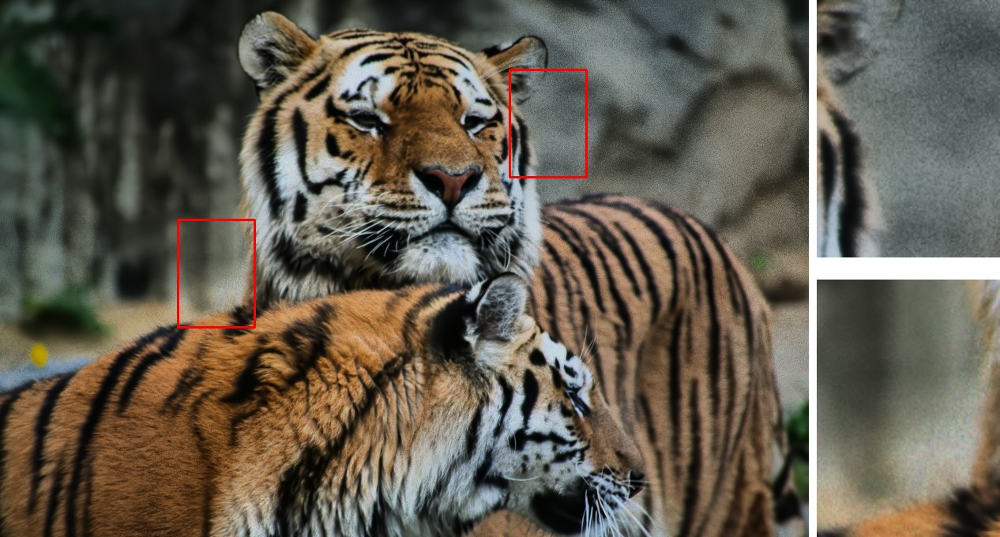
图 8：SwinIR [100] 复原模型图像的一个示例。
表 X：比较推理与即时评分任务之间的关系。最佳结果加粗。总体上，两项任务彼此有益。
(a) Results on the instant rating task. BAPPStest KADIDtest PIPALtest TID2013 LIVE-MD MDID2013 Only Rating 81.6 / 81.6 92.4 / 92.3 89.1 / 89.0 94.2 / 94.1 92.9 / 92.7 92.1 / 91.7 Co-training 84.7 / 82.4 93.6 / 93.1 90.5 / 90.0 96.9 / 96.4 92.1 / 91.8 90.0 / 89.6
(a) 即时评分任务上的结果。BAPPS测试 KADID测试 PIPAL测试 TID2013 LIVE-MD MDID2013 仅评分 81.6 / 81.6 92.4 / 92.3 89.1 / 89.0 94.2 / 94.1 92.9 / 92.7 92.1 / 91.7 联合训练 84.7 / 82.4 93.6 / 93.1 90.5 / 90.0 96.9 / 96.4 92.1 / 91.8 90.0 / 89.6
(b) Results on the comparison reasoning task. Single-distortion Multi-distortion GPT-4 Score BLEU ROUGE-L GPT-4 Score BLEU ROUGE-L Only Reasoning 74.3 / 69.6 0.203 / 0.202 0.465 / 0.453 70.6 / 69.1 0.165 / 0.165 0.414 / 0.407 Co-training 75.1 / 74.9 0.207 / 0.207 0.466 / 0.463 71.7 / 68.7 0.176 / 0.172 0.420 / 0.413
(b) 比较推理任务上的结果。单失真 多失真 GPT-4 分数 BLEU ROUGE-L GPT-4 分数 BLEU ROUGE-L 仅推理 74.3 / 69.6 0.203 / 0.202 0.465 / 0.453 70.6 / 69.1 0.165 / 0.165 0.414 / 0.407 联合训练 75.1 / 74.9 0.207 / 0.207 0.466 / 0.463 71.7 / 68.7 0.176 / 0.172 0.420 / 0.413
Results on Q-Bench. Q-Bench [4] is a VLM benchmark for low-level perception, but it mainly contains multiple-choice questions, whereas our model targets descriptive assessments, making direct evaluation mismatched. To test whether our data still helps on Q-Bench, we co-train with the multiple-choice dataset Q-Instruct [5] in Tab. XI. Co-training on Q-Instruct and our dataset consistently outperforms training on Q-Instruct alone, especially in distortion-related questions, demonstrating the benefit of our dataset even under a format shift. We borrow LLaVA results trained on Q-Instruct from [5] for reference.
Q-Bench 上的结果。Q-Bench [4] 是一个面向底层感知的 VLM 基准，但它主要包含多选题，而我们的模型面向描述式评价，直接评估并不匹配。为检验我们的数据在 Q-Bench 上是否仍有助益，我们在表 XI 中与多选题数据集 Q-Instruct [5] 联合训练。在 Q-Instruct 与我们的数据集上联合训练始终优于仅在 Q-Instruct 上训练，在与失真相关的问题上尤为明显，说明即便在格式发生变化的情况下，我们的数据集仍有价值。我们从 [5] 借用其在 Q-Instruct 上训练的 LLaVA 结果作为参照。
表 XI：Q-Bench [4] 上的结果。最佳结果加粗。
| Q-Bench | Yes-or-No | What | How | Distortion | Other |
| LLaVA (Q-Instruct trained) | 66.4 | 58.2 | 50.5 | 49.4 | 65.7 |
| Ours (Q-Instruct trained) | 70.5 | 49.6 | 51.7 | 55.4 | 56.7 |
| Ours (Q-Instruct + Our data trained) | 74.0 | 62.8 | 54.0 | 66.7 | 63.9 |
Relationships between the comparison reasoning and instant rating tasks are studied in Tab. X. First, comparison reasoning task improves the performance on four instant rating datasets, but decreases the results on two datasets. Overall, comparison reasoning task helps the instant rating. Second, instant rating task stably improves the performance on comparison reasoning task.
比较推理与即时评分任务之间的关系在表 X 中得到研究。第一，比较推理任务提升了四个即时评分数据集上的性能，但在两个数据集上降低了结果。总体上，比较推理任务对即时评分有帮助。第二，即时评分任务稳定地提升了比较推理任务上的性能。
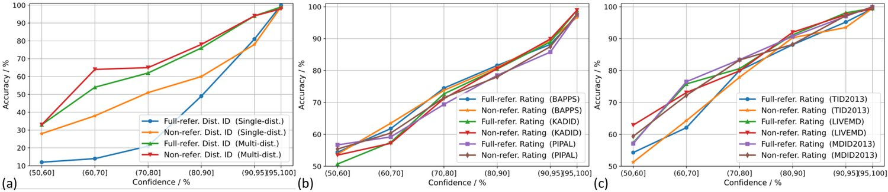
图 9：我们估计的置信度分数与模型性能高度相关，涵盖 (a) 失真识别以及不同基准上 (b)(c) 即时评分任务在全参考与无参考设定下的表现。
Confidence. We examine the correlation between the performance and estimated confidence in Fig. 9. For distortion identification and instant rating tasks, across both full-reference and non-reference settings, our model demonstrates improved performance as the confidence interval increases. This validates the effectiveness of our confidence estimation.
置信度。我们在图 9 中考察性能与估计置信度之间的相关性。对失真识别与即时评分任务，在全参考与无参考两种设定下，随着置信度区间升高，我们的模型性能随之提升。这验证了我们置信度估计的有效性。
Assistant model. To construct comparison reasoning responses, we train an assistant model to predict comparison results (see Fig. 3). These results serve as pseudo labels, which are subsequently provided to GPT-4V to generate responses. We compare the assistant model to GPT-4V on three out-of-distribution IQA datasets. The results in Tab. IX affirm the superiority of the assistant model.
辅助模型。为构造比较推理响应，我们训练了一个辅助模型来预测比较结果（见图 3）。这些结果作为伪标签，随后被提供给 GPT-4V 以生成响应。我们在三个分布外 IQA 数据集上把辅助模型与 GPT-4V 做了比较，表 IX 的结果证实了辅助模型的优越性。
Retaining resolution. In Tab. XII, we study the effects of retaining resolution. Specially, we randomly sample 1,000 high-quality images whose aspect ratios are greater than . These images are either resized by swapping their height and width (denoted as HW), or bi-linearly down-sampled by a scale factor of 0.5, 0.75, 0.8, 0.85, 0.9, or 0.95. DepictQA-Wild is requested to conduct the instant rating task, i.e., compare the original and resized images to determine the superior one. The alternative method of retaining resolution is to resize both original image and resized image to a larger resolution, which can maintain the quality difference. In contrast, resizing both images to smaller resolution results in two nearly same images. The results are presented in Tab. XII. First, retaining resolution is crucial for identifying images with better aspect ratio or higher resolution. Second, with down-sampling becomes severer (i.e., aspect ratio is from 0.95 to 0.5), the accuracy is improved since the quality drop is more significant. Third, for severe down-sampling (e.g., aspect ratio is 0.5) where the quality degradation is quite obviously, retaining resolution or just resizing both images to a larger size both perform well ( 99.0% ). Finally, however, for relatively slight down-sampling (e.g., aspect ratio is from 0.75 to 0.95), the performance of retaining resolution is stably superior than resizing.
保留分辨率。在表 XII 中，我们研究保留分辨率的作用。具体地，我们随机采样 1,000 张宽高比大于 的高质量图像。这些图像要么通过交换高与宽被缩放（记为 HW），要么以 0.5、0.75、0.8、0.85、0.9 或 0.95 的比例因子做双线性下采样。我们让 DepictQA-Wild 执行即时评分任务，即比较原始图像与缩放后图像以判断哪一张更优。保留分辨率的替代做法是把原始图像与缩放后图像都放大到更大的分辨率，这能保持质量差异；相反，把两张图像都缩放到更小分辨率会得到两张几乎相同的图像。结果见表 XII。第一，保留分辨率对于识别宽高比更优或分辨率更高的图像至关重要。第二，随着下采样变得更严重（即比例因子从 0.95 到 0.5），准确率提升，因为质量下降更显著。第三，对严重下采样（如比例因子为 0.5）——质量退化已相当明显——保留分辨率与把两张图像都放大到更大尺寸的做法都表现良好（ 99.0%）。最后，然而，对相对轻微的下采样（如比例因子从 0.75 到 0.95），保留分辨率的性能稳定优于缩放。
表 XII：在训练与推理中保留分辨率，对于识别宽高比更优或分辨率更高的图像十分重要。
| Retain Resolution? | HW | |||||||
| Training | Inference | |||||||
| ✗ | ✗ | 73.0 | 99.0 | 93.5 | 91.7 | 83.8 | 77.2 | 71.2 |
| ✓ | ✗ | 85.6 | 99.8 | 99.4 | 99.0 | 95.9 | 94.8 | 89.4 |
| ✓ | ✓ | 98.8 | 99.9 | 99.6 | 99.3 | 99.1 | 96.8 | 97.0 |
Ablation study on module choice. Under the same VLM architecture framework and the same training loss, we compare two vision-text connectors (i.e., vision abstractor v.s. projector) and three LLMs on distortion identification and instant rating tasks. The default vision-text connector and LLM in this ablation study are vision projector and Vicuna-v1.5-7B. The results in Tab. XIII show that simply replacing vision-text connectors or LLMs has relatively little influence on performance. Considering that vision abstractor can greatly reduce the computational burden than projector, we select abstractor by default. For example, for a image, projector generates 1024 tokens, while abstractor only outputs 64 tokens. Note that the computation amount is proportional to the square of the number of tokens.
模块选择的消融研究。在相同的 VLM 架构框架与相同的训练损失下，我们在失真识别与即时评分任务上比较了两种视觉—文本连接器（即视觉抽象器与投影器）与三种 LLM。本消融研究中默认的视觉—文本连接器与 LLM 分别为视觉投影器与 Vicuna-v1.5-7B。表 XIII 的结果表明，简单地替换视觉—文本连接器或 LLM 对性能影响相对较小。考虑到视觉抽象器比投影器能大幅降低计算负担，我们默认选择抽象器。例如，对一张 的图像，投影器生成 1024 个词元，而抽象器只输出 64 个词元。需要注意的是，计算量与词元数量的平方成正比。
表 XIII：简单地替换模块（即视觉—文本连接器与 LLM）对性能影响相对较小。
| Types | Architectures | Distortion Identification | Instant Rating | ||||||
| Single-dist. ID | Multi-dist. ID | BAPPS | KADID | PIPAL | TID2013 | LIVE-MD | MDID2013 | ||
| Vision-text connector | Projector | 97.9 / 94.7 | 90.5 / 89.5 | 82.7 / 81.4 | 92.7 / 92.4 | 89.2 / 88.8 | 96.2 / 95.9 | 92.1 / 91.9 | 89.1 / 88.4 |
| Abstractor | 97.7 / 94.1 | 91.3 / 89.3 | 84.7 / 82.4 | 93.6 / 93.1 | 90.5 / 90.0 | 96.9 / 96.4 | 92.1 / 91.8 | 90.0 / 89.6 | |
| LLM | Vicuna-v1.5-7B | 97.9 / 94.7 | 90.5 / 89.5 | 82.7 / 81.4 | 92.7 / 92.4 | 89.2 / 88.8 | 96.2 / 95.9 | 92.1 / 91.9 | 89.1 / 88.4 |
| Vicuna-v0-7B | 96.9 / 93.6 | 89.8 / 89.3 | 82.5 / 81.3 | 92.8 / 92.2 | 88.2 / 88.1 | 95.0 / 94.7 | 91.2 / 91.1 | 90.5 / 90.2 | |
| LLaMA-2-7B | 97.0 / 94.0 | 90.6 / 89.1 | 81.7 / 81.5 | 92.6 / 92.0 | 88.4 / 87.9 | 94.6 / 94.1 | 91.8 / 91.1 | 90.9 / 90.7 | |
Ablation on comparison order. We evaluate the impact of comparison order using the fine-grained dataset of [101], following its protocol to report consistency / accuracy / correlation. Here, consistency measures prediction stability when the two input images are swapped. As shown in Tab. XIV, our model attains >90% consistency under order reversal, and achieves substantially higher comparison accuracy and score correlation than Q-Instruct and GPT-4V. The Q-Instruct and GPT-4V results are quoted from [101]. These findings indicate that our model is robust to input-order variations. In addition, we provide the average confidence of our model in Tab. XV. The results show that the confidence of consistent predictions is substantially higher than that of inconsistent ones, highlighting the model’s ability for self-evaluation.
比较顺序的消融。我们使用 [101] 的细粒度数据集评估比较顺序的影响，并遵循其协议报告一致性 / 准确率 / 相关性。这里的一致性衡量在两张输入图像互换时预测的稳定性。如表 XIV 所示，我们的模型在顺序颠倒时达到 >90% 的一致性，并取得了远高于 Q-Instruct 与 GPT-4V 的比较准确率与分数相关性。Q-Instruct 与 GPT-4V 的结果引自 [101]。这些发现表明我们的模型对输入顺序变化具有鲁棒性。此外，我们在表 XV 中给出了模型的平均置信度。结果显示，一致预测的置信度显著高于不一致预测，凸显了模型的自评估能力。
Failure cases. We further examine typical failure cases for a general VLM (i.e., Qwen2.5-VL-7B) and our DepictQA-Wild. Both models sometimes confuse visually similar distortions. In the first row of Fig. 10, they misclassify “compression” (blocky artifacts), “pixelation” (aliasing-induced jaggedness), and “blur” (low-frequency smoothing). In the second row, they confuse “insufficient brightness”, “insufficient saturation”, and “insufficient contrast”, which also produce similar global appearance changes. These results suggest that the fine-grained discrimination ability of current models remains limited.
失败案例。我们进一步考察了一个通用 VLM（即 Qwen2.5-VL-7B）与我们的 DepictQA-Wild 的典型失败案例。两个模型有时会混淆视觉上相似的失真。在图 10 第一行中，它们把「压缩」（块状伪影）、「像素化」（由锯齿造成的锯齿感）与「模糊」（低频平滑）错误分类。在第二行中，它们混淆了「亮度不足」「饱和度不足」与「对比度不足」——这三者同样产生相似的全局外观变化。这些结果表明，当前模型的细粒度判别能力仍然有限。
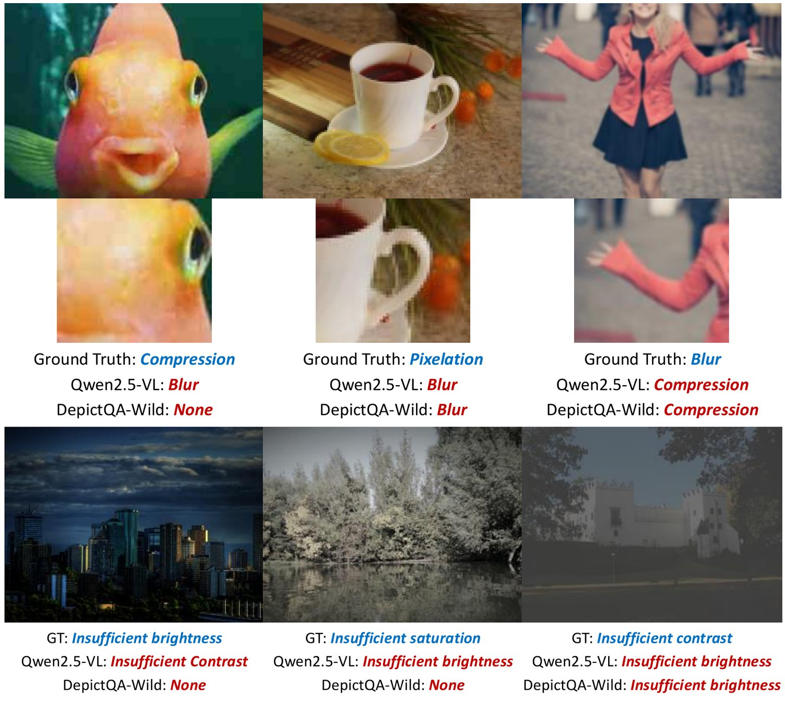
图 10：失败案例，模型混淆了某些相似的失真，导致错误分类。
表 XIV：在 [101] 发布的细粒度数据集上比较顺序的消融结果。我们遵循 [101] 报告一致性（%）/ 准确率（%）/ 相关性作为指标。最佳结果加粗。
表 XV：[101] 细粒度数据集上一致与不一致比较结果的置信度估计。
| Confidence statistics | Consistency | Inconsistency |
| CSIQ (Levels) | 0.933 0.120 | 0.629 0.083 |
| CSIQ (Types) | 0.860 0.141 | 0.611 0.098 |
| SPAQ (Scores) | 0.900 0.125 | 0.649 0.110 |
Assessing web-downloaded images. A practical usage of an IQA model involves assessing the quality of real images. We collect a total of 50 real-world images from the web, featuring diverse contents including animals, plants, faces, buildings, and landscapes. Qualitative results in Fig. 11 and Fig. S8 (in Supp. Mat.) indicate that our method can assess real images with detailed descriptions. More importantly, DepictQA-Wild can describe how the distortions affect the contents. For example, in Fig. 11d, our model first accurately identifies the “severe quantization”, then describes that the quantization “causes banding in the sky and water”, and finally concludes that the quality “is considerably degraded”. We also conduct a user study with 20 participants involved. Participants are instructed to choose the assessment result that is of the highest quality among the test methods. The results are shown in Fig. 7, revealing that our approach stably outperforms baseline methods in aligning human perception.
评价网络下载的图像。IQA 模型的一种实用用途是评价真实图像的质量。我们从网络收集了共 50 张真实图像，内容涵盖动物、植物、人脸、建筑与风景。图 11 与补充材料图 S8 中的定性结果表明，我们的方法能以详细的描述评价真实图像。更重要的是，DepictQA-Wild 能描述失真如何影响内容。例如在图 11d 中，我们的模型首先准确识别出「严重量化」，随后描述该量化「在天空与水面上造成条带」，最后得出质量「显著下降」的结论。我们还开展了一项有 20 名参与者参加的用户研究，参与者被要求在各测试方法中选择质量最高的评价结果。结果如图 7 所示，表明我们的方法在与人类感知对齐上稳定优于基线方法。
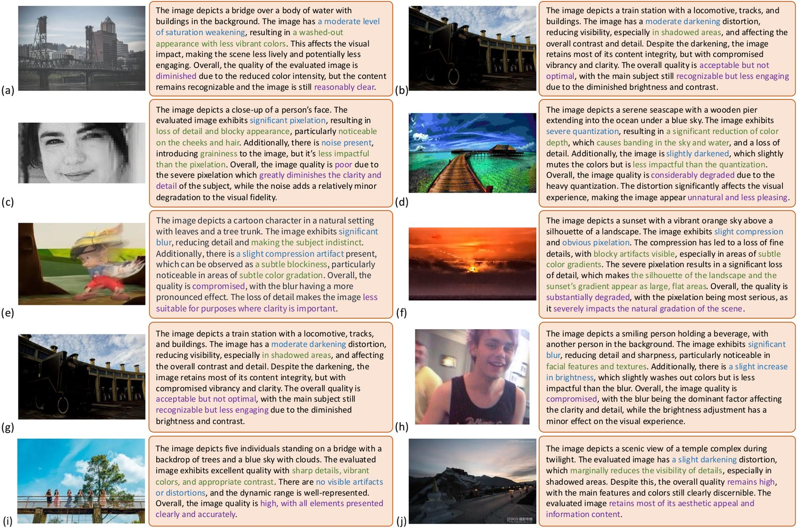
图 11：评价网络下载图像的定性结果。更多结果见补充材料图 S8。
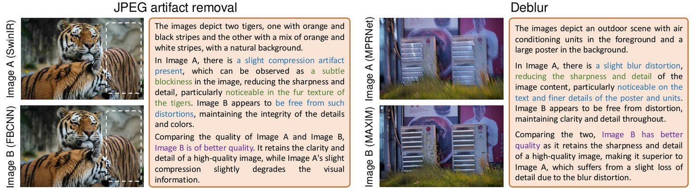
图 12：在模型处理图像上详细比较推理的定性结果。
表 XVI：模型处理图像上的结果。最佳结果加粗。GPT-4V 在排序上表现出波动性，因此其结果以均值 标准差报告。
| NIQE | ClipIQA | MUSIQ | ManIQA | GPT-4V | Ours | |
| Rank | 2.20 | 1.40 | 1.60 | 1.80 | 1.340.27 | 1.20 |
| Accuracy | 45.5 | 72.7 | 77.3 | 66.4 | 74.5 | 82.7 |
Comparison on model-processed images. To develop image restoration models, one often needs to compare the restoration quality of different models. We consider five common image restoration tasks: super-resolution, denoising, JPEG compression artifact removal, motion deblurring, and defocus deblurring. For each task, we collect three to four cutting-edged models in recent years (listed in Tab. XVII), apply them to a correspondingly degraded image, and then manually rank the resultant model-processed images. To find the image considered best by VLMs, we linearly scan the candidates and compare them in pairs. As VLMs’ results are not deterministic and may be sensitive to the presentation order of images, we repeat the linear scan 10 times and randomly shuffle the scan order each time. The average rank of the found best restoration and the accuracy of the paired comparison are reported in Tab. XVI. First, DepictQA-Wild achieves an average rank of 1.20 (1 is the best), outperforming both GPT-4V and score-based methods. Second, though the temperature is set to 0, GPT-4V shows variability with a large standard deviation. Third, model-restored images are generally out-of-distribution for our model, while DepictQA-Wild exhibits excellent generalization ability on these images. For example, the image in Fig. 8 is restored from a noisy image. There is still remnant noise, which is somewhat strange. For such an OOD image, our DepictQA-Wild correctly recognizes it to be inferior, but MANIQA, MUSIQ, and NIQE consider it as the best of the four candidates. Finally, we provide two qualitative results of detailed comparison reasoning on model-processed images in Fig. 12. One compares SwinIR and FBCNN in the JPEG compression artifact removal task, and the other compares MPRNet and MAXIM in the deblur task. Our model can generate a reasonable explanation for the comparison results.
在模型处理图像上的比较。开发图像复原模型时，常常需要比较不同模型的复原质量。我们考虑五项常见的图像复原任务：超分辨率、去噪、JPEG 压缩伪影去除、运动去模糊与散焦去模糊。对每项任务，我们收集了近年来三到四个前沿模型（列于表 XVII），把它们应用于相应的退化图像，然后人工对所得的模型处理图像排序。为找出 VLM 认为最优的图像，我们线性扫描候选并与它们逐对比较。由于 VLM 的结果并非确定性的，且可能对图像的呈现顺序敏感，我们重复线性扫描 10 次，每次随机打乱扫描顺序。所找到的最佳复原结果的平均排名与成对比较的准确率报告于表 XVI。第一，DepictQA-Wild 取得 1.20 的平均排名（1 为最佳），优于 GPT-4V 与基于分数的方法。第二，尽管温度设为 0，GPT-4V 仍表现出波动，标准差较大。第三，模型复原的图像对我们的模型而言通常属于分布外，而 DepictQA-Wild 在这些图像上展现出出色的泛化能力。例如，图 8 中的图像是从含噪图像复原而来，仍有残余噪声，这在一定程度上显得奇怪。对这样一张分布外图像，我们的 DepictQA-Wild 正确判定其质量较差，而 MANIQA、MUSIQ 与 NIQE 却认为它是四个候选中最好的。最后，我们在图 12 中给出两个在模型处理图像上详细比较推理的定性结果：一个在 JPEG 压缩伪影去除任务上比较 SwinIR 与 FBCNN，另一个在去模糊任务上比较 MPRNet 与 MAXIM。我们的模型能为比较结果生成合理的解释。
表 XVII：比较模型处理图像的真实实验中使用的图像复原模型，包括 SwinIR [100]、HAT [102]、X-Restormer [103]、MPRNet [104]、Restormer [105]、FBCNN [106]、MAXIM [107]、MPRNet [104]、DRBNet [108] 与 IFAN [109]。对 FBCNN，「=90」表示在质量因子 90 上训练，「blind」表示对质量因子不可知。
[t] Image restoration task Image restoration models Super-resolution SwinIR, HAT, X-Restormer Denoising SwinIR, MPRNet, Restormer, X-Restormer JPEG artifact removal SwinIR, FBCNN (=90), FBCNN (blind) Motion deblurring MAXIM, MPRNet, Restormer Defocus deblurring DRBNet, IFAN, Restormer
[t] 图像复原任务 图像复原模型 超分辨率 SwinIR、HAT、X-Restormer 去噪 SwinIR、MPRNet、Restormer、X-Restormer JPEG 伪影去除 SwinIR、FBCNN（=90）、FBCNN（blind） 运动去模糊 MAXIM、MPRNet、Restormer 散焦去模糊 DRBNet、IFAN、Restormer
Training cost. The total parameters are 7.11B, including 6.76B for LLM, 0.30B for vision encoder, and 54M for vision abstractor. The trainable parameters are 70M (54M for vision abstractor and 16M for LoRA), constituting only 0.98% of the total parameters. The model is trained on 8 GPUs (RTX A6000). The training is completed in around 22 hours.
训练开销。总参数量为 7.11B，其中 LLM 6.76B、视觉编码器 0.30B、视觉抽象器 54M。可训练参数为 70M（视觉抽象器 54M、LoRA 16M），仅占总参数的 0.98%。模型在 8 块 GPU（RTX A6000）上训练，训练约 22 小时完成。
Inference cost. The inference latency depends on the response length and it is tested on a single RTX A6000 GPU. For brief tasks task with the short answer prompt (about 2.92 words), the inference time stands at approximately 2.23s / batch=32, transformed to 0.07s / sample. For the assessment reasoning task (75.84 words on average), the inference time is 22.97s / batch=32 (i.e., 0.72s per response). Despite adopting VLMs, our DepictQA-Wild remains deployable on a single consumer GPU (e.g., RTX3090).
推理开销。推理时延取决于响应长度，在单块 RTX A6000 GPU 上测试。对带短答案提示的简要任务（约 2.92 个词），推理时间约为 2.23s / batch=32，折算为 0.07s / 样本。对评价推理任务（平均 75.84 个词），推理时间为 22.97s / batch=32（即每条响应 0.72s）。尽管采用了 VLM，我们的 DepictQA-Wild 仍可部署在单块消费级 GPU（如 RTX3090）上。
We introduce DepictQA-Wild, a VLM-based IQA model, empowered by a new multi-functional task paradigm, dataset enrichment, and training technique, surpassing baseline methods in both benchmarks and two real-world applications, showing the potential of descriptive quality assessment.
我们提出 DepictQA-Wild——一个基于 VLM 的 IQA 模型，它由新的多功能任务范式、数据集扩充与训练技术共同赋能，在基准与两项真实应用中均超越基线方法，展示了描述式质量评价的潜力。
Limitations. First, the fine-grained abilities requiring more high-level perception skills are still unsatisfactory. For example, in Fig. 11c, though identifying noise and pixelation successfully, our model fails to point out that they are respectively located in the left and right parts. One solution is to take the segmentation model to add various distortions to different regions. Second, for the convenience of evaluating, analyzing, and improving the model, we mainly focus on standardized answers. To achieve more flexible responses, LLM rewriting and human annotation can be used to increase linguistic diversity during dataset construction. Third, whether our assessment can be used as feedback to improve the quality of generation or restoration models is still under-explored.
局限性。第一，需要更高层感知技能的细粒度能力仍不尽如人意。例如在图 11c 中，尽管成功识别出噪声与像素化，我们的模型未能指出它们分别位于左半部分与右半部分。一种解决方案是引入分割模型，在不同区域施加不同失真。第二，为便于评估、分析与改进模型，我们主要关注标准化的答案。为实现更灵活的响应，可以在数据集构建中采用 LLM 改写与人工标注来增加语言多样性。第三，我们的评价能否作为反馈用于改进生成或复原模型的质量，仍有待探索。
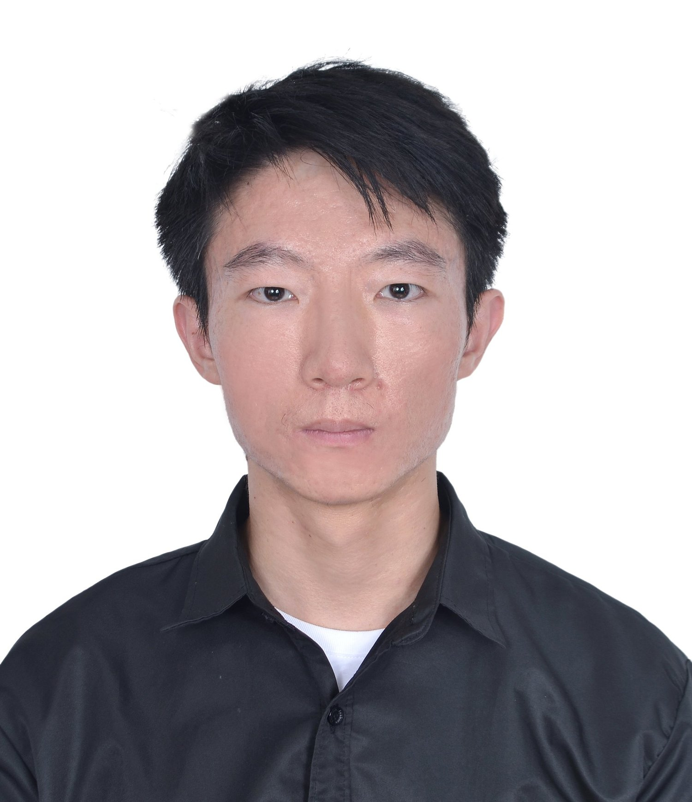 |
Zhiyuan You is a Ph.D. candidate from Multimedia Laboratory at The Chinese University of Hong Kong, under the supervision of Prof. Chao Dong and Prof. Tianfan Xue. He obtained both his Bachelor’s and Master’s degrees from Shanghai Jiao Tong University, where he was supervised by Prof. Xinyi Le and Prof. Yu Zheng. His research interests focus on low-level vision based on foundation models. |
| Jinjin Gu received his Ph.D. degree from the School of Electrical and Computer Engineering at the University of Sydney in 2024, under the supervision of Prof. Wanli Ouyang and Prof. Luping Zhou. Prior to that, he earned a Bachelor’s degree in Computer Science and Engineering from The Chinese University of Hong Kong, Shenzhen, in 2020. He collaborates closely with Prof. Chao Dong and Prof. Junhua Zhao. His research focuses on computer vision and image processing, with additional interests in the interpretability of deep learning algorithms and the industrial applications of machine learning. |
| Xin Cai received the B.S. degree in computer science from University of Chinese Academy of Sciences (UCAS) in 2020 and the M.S. degree from the Institute of Computing Technology(ICT), Chinese Academy of Sciences(CAS),Beijing, China.He is currently pursuing the Ph.D. degree in The Chinese University of Hong Kong (CUHK). His research interests include computer vision, computational photography and machine learning. |
| Zheyuan Li is currently a Ph.D. Student at University of Macau. He has also worked as a research intern since 2021 in Shenzhen Institutes of Advanced Technology, Chinese Academy of Sciences. He received his B.E. degree from Northwestern Polytechnical University, Xi’an, in 2022. His research interests include image super-resolution, image restoration and enhancement, and multi-modal low-level-vision model. |
| Kaiwen Zhu is currently a Ph.D. student in Shanghai Jiao Tong University supervised by Prof. Chao Dong. He obtained his B.Eng. degree from Shanghai Jiao Tong University in 2024. He has been working as an intern researcher in Shanghai Artificial Intelligence Laboratory since 2023. His research focuses on low-level vision and intelligent agents. |
| Chao Dong is a professor at Shenzhen Institutes of Advanced Technology, Chinese Academy of Science (SIAT), and Shanghai Artificial Intelligence Laboratory. In 2014, he first introduced deep learning method – SRCNN into the super-resolution field. This seminal work was chosen as one of the top ten “Most Popular Articles” of TPAMI in 2016. His team has won several championships in international challenges –NTIRE2018, PIRM2018, NTIRE2019, NTIRE2020 AIM2020 and NTIRE2022. He worked in SenseTime from 2016 to 2018, as the team leader of Super-Resolution Group. In 2021, he was chosen as one of the World’s Top 2% Scientists. In 2022, he was recognized as the Al 2000 Most Influential Scholar Honorable Mention in computer vision. His current research interest focuses on low-level vision problems, such as image/video super-resolution, denoising and enhancement. |
| Tianfan Xue is a Vice-Chancellor Assistant Professor at the Multimedia Lab in the Department of Information Engineering at the Chinese University of Hong Kong (CUHK). Prior to this, he worked in the Computational Photography Team at Google Research for over five years. He received his Ph.D. degree from the Computer Science and Artificial Intelligence Laboratory (CSAIL) at MIT in 2017. He also holds an M.Phil. degree from CUHK, obtained in 2011, and a Bachelor’s degree from Tsinghua University. His research focuses on computational photography, 3D reconstruction, and generation. His work on bilateral based 3D reconstruction has won SIGGRAPH Honorable mention 2024. He also served as an area chair for WACV, CVPR, NeurIPS, and ACM MM. |
As stated in Sec. III-B, to facilitate the dataset construction, we design and implement a comprehensive distortion library. Our distortion system contains 12 distortion super-categories in total, with each category consisting of multiple sub-categories. For instance, the “blur” category encompasses “Gaussian blur”, “motion blur”, “lens blur”, etc. In total, there are 35 sub-categories. For each sub-category, there are 5 severity levels: “slight”, “moderate”, “obvious”, “serious”, and “catastrophic”. In this section, we elaborate on our distortion implementations, including the principles, formulas, and severity setup. We also provide one example for each implementation in Fig. S3, with the reference image in Fig. S1.
如第 III-B 节所述，为便于数据集构建，我们设计并实现了一个全面的失真库。我们的失真系统共包含 12 个失真父类，每个父类由若干子类构成。例如，「模糊」类涵盖「高斯模糊」「运动模糊」「镜头模糊」等，共计 35 个子类。对每个子类，设有 5 个严重等级：「轻微」「中等」「明显」「严重」与「灾难性」。本节详述我们的失真实现，包括原理、公式与等级设置。我们还在图 S3 中为每种实现给出一个示例，参考图像见图 S1。
Blur.
模糊。
Gaussian blur. The distorted image is generated by convolving the reference image with a Gaussian blur kernel. We set the kernel size to be a function of the standard deviation of the blur kernel: .
• 高斯模糊。失真图像由参考图像与高斯模糊核卷积得到。我们把核大小 设为模糊核标准差 的函数：。
Motion blur. Linear motion blur is applied to the reference image using the linear filter, where .
• 运动模糊。使用线性滤波器对参考图像施加线性运动模糊，其中 。
Glass blur. Filter the image using a Gaussian filter, then randomly jitter each pixel in the image by pixels, and repeat this process iterations. .
• 玻璃模糊。先用高斯滤波器滤波，然后把图像中每个像素随机抖动 个像素，并重复该过程 次。。
Lens blur. This distortion uses the circular average filter, where .
• 镜头模糊。该失真使用圆形平均滤波器，其中 。
Zoom blur. The image is gradually zoomed in and overlaid to calculate the average.
• 缩放模糊。把图像逐步放大并叠加后计算平均值。
Jitter blur. Each pixel is randomly displaced by a shift of pixels both in and dimensions, with a total of 5 displacements, where .
• 抖动模糊。每个像素随机位移 个像素，位移同时发生在 与 两个维度上，共位移 5 次，其中 。
Noise.
噪声。
Gaussian noise in RGB space. Additive Gaussian noise is applied to each of the RGB channels of an image, where .
• RGB 空间中的高斯噪声。对图像的每个 RGB 通道施加加性高斯噪声，其中 。
Gaussian noise in YCrCb space. Similar to the Gaussian noise in RGB space, this distortion is implemented in YCbCr space, where the value of can be (0.05, 1, 1), (0.06, 1.45, 1.45), (0.07, 1.9, 1.9), (0.08, 2.35, 2.35), or (0.09, 2.8, 2.8).
• YCrCb 空间中的高斯噪声。与 RGB 空间中的高斯噪声类似，该失真在 YCbCr 空间中实现，其中 的取值可为 (0.05, 1, 1)、(0.06, 1.45, 1.45)、(0.07, 1.9, 1.9)、(0.08, 2.35, 2.35) 或 (0.09, 2.8, 2.8)。
Speckle noise. Speckle Noise is also known as Multiplicative Gaussian noise, where .
• 散斑噪声。散斑噪声又称乘性高斯噪声，其中 。
Spatially correlated noise. The reference image is first corrupted by an additive Gaussian noise, which results in each pixel being corrupted by an independent and identically distributed noise pattern. The resultant image is then filtered with an average filter of kernel size 3 × 3, correlating the intensity of each pixel with those of the neighboring pixels. More specifically, the distorted image is given by:
where is the distorted image, is the reference image, is the set of neighboring pixels, and .
• 空间相关噪声。参考图像先被加性高斯噪声破坏，使每个像素都被独立同分布的噪声模式污染；所得图像再用 3 × 3 的平均滤波器滤波，使每个像素的强度与其邻域像素相关。更具体地，失真图像由下式给出： 其中 为失真图像， 为参考图像， 为邻域像素集合，。
Poisson noise. This distortion generates Poisson noise based on the image pixel values, where .
• 泊松噪声。该失真依据图像像素值生成泊松噪声，其中 。
Impulse noise. Impulse noise is also known as salt and pepper noise. The density of the noise: .
• 脉冲噪声。脉冲噪声又称椒盐噪声。噪声密度为 。
Compression.
压缩。
JPEG. The distorted image is a JPEG-compressed version of the reference image, where the parameter in Pillow, quality .
• JPEG。失真图像是参考图像的 JPEG 压缩版本，其中 Pillow 中的参数为质量 。
JPEG 2000. This distortion is an advanced compression widely used, where the Pillow’s parameter quality .
• JPEG 2000。该失真是一种广泛使用的先进压缩方式，其中 Pillow 的参数为质量 。
图 S1：图 S3 中失真图像的参考图像。
Brightness.
亮度。
Brightness shift in HSV space. The RGB image is mapped to HSV, and then we enhance and reduce the brightness by V channel, where for Brightening and for darkening.
• HSV 空间中的亮度偏移。把 RGB 图像映射到 HSV，然后通过 V 通道增强或降低亮度，其中变亮取 、变暗取 。
Brightness shift in RGB space. We enhance and reduce the brightness in all channels, where for Brightening and for darkening.
• RGB 空间中的亮度偏移。我们在所有通道上增强或降低亮度，其中变亮取 、变暗取 。
Gamma brightness tuning in HSV space. The RGB image is mapped to HSV space and then we enhanced and reduce the brightness by V channel with a gamma function, where for brightening and for darkening.
• HSV 空间中的伽马亮度调节。把 RGB 图像映射到 HSV 空间，然后用伽马函数通过 V 通道增强或降低亮度，其中变亮取 、变暗取 。
Contrast.
对比度。
Contrast tuning by scaling. Given an input image , there is a corresponding , which is a gray image in which each element is the mean of . The distorted image is generated as following: , where for strengthening and for weakening.
• 通过缩放调节对比度。给定输入图像 ，存在对应的 ，它是一幅灰度图像，其中每个元素是 的均值。失真图像 由下式生成：，其中增强取 、减弱取 。
Contrast tuning by stretching. Contrast changing is performed as follows: , where is the distorted image, is the reference image, and is the mean intensity for channel . for weakening, and for strengthening.
• 通过拉伸调节对比度。对比度变化按如下方式进行：，其中 为失真图像， 为参考图像， 为通道 的平均强度。减弱取 ，增强取 。
Saturate.
饱和度。
Saturate tuning in HSV space. The reference image is firstly mapped into HSV space and then the S channel is scaled, where the scale factor for weakening and for enhancement.
• HSV 空间中的饱和度调节。参考图像先被映射到 HSV 空间，再对 S 通道做缩放，其中减弱的缩放因子为 、增强为 。
Saturate tuning in YCbCr space. The reference image is firstly mapped into YCbCr space and then the distorted image is generated like the following formulation:
| (S1) |
| (S2) |
where donates the scale factor for weakening and for strengthening.
• YCbCr 空间中的饱和度调节。参考图像 先被映射到 YCbCr 空间，然后失真图像 按如下公式生成： (S1) (S2) 其中 表示减弱的缩放因子， 表示增强的缩放因子。
Over-sharpen. The reference image is firstly processed by a Gaussian blur kernel to generated a blurred image . Then the original image is over-sharpened with , where .
过锐化。参考图像 先经高斯模糊核处理生成模糊图像 ，然后原图以 被过锐化，其中 。
Pixelate. The reference image is firstly down-sampled in BOX mode, then up-sampled to the original resolution in NEAREST mode, where the down-sampling factor .
像素化。参考图像先以 BOX 模式下采样，再以 NEAREST 模式上采样回原始分辨率，其中下采样因子为 。
Quantize.
量化。
Color quantization using histogram equalization. The color elements are divided into an equal histogram for quantization, where the number of classes .
• 使用直方图均衡化的颜色量化。把颜色元素划分为等间距直方图以进行量化，其中类别数为 。
Color quantization using histogram median. This distortion is implemented by the function PIL.Image.Quantize.MEDIANCUT, where the number of classes .
• 使用中值切分的颜色量化。该失真由函数 PIL.Image.Quantize.MEDIANCUT 实现，其中类别数为 。
Color quantization using OTSU method, which is implemented by existing function skimage.filters.threshold_multiotsu to generate thresholds. The number of classes .
• 使用 OTSU 方法的颜色量化，由现有函数 skimage.filters.threshold_multiotsu 生成阈值实现。类别数为 。
Multi-distortion setups. As discussed in Sec. III-B, multiple distortions may occur simultaneously on the same image in practical usage. First, we observe that humans can identify at most two distortions when three or more are applied, as in Fig. S2, thus we limit the number of applied distortions to two. Second, some distortions could weaken each other’s presentation (e.g., “brighten” weakens “darken”, “blur” weakens “over-sharpen”). Also, certain distortions show similar visual effects (e.g., “pixelate” looks similar to “blur”), making it hard to identify both if applied simultaneously. Hence, to exclude contradictory or similar distortion combinations, we manually review all possible combinations. All feasible distortion combinations are provided in Tab. S1.
多重失真设定。如第 III-B 节所述，在实际使用中同一张图像上可能同时出现多种失真。第一，我们观察到当施加三种或更多失真时，人类最多只能识别出两种，如图 S2 所示，因此我们把施加的失真数量限制为两种。第二，某些失真会削弱彼此的呈现（例如「变亮」削弱「变暗」、「模糊」削弱「过锐化」）；某些失真还表现出相似的视觉效果（例如「像素化」看起来与「模糊」相似），若同时施加则难以把两者都识别出来。因此，为排除相互矛盾或相似的失真组合，我们人工审核了所有可能的组合。所有可行的失真组合见表 S1。
表 S1：多重失真设定，其中列出所有可行的失真组合。
| First Distortion | All Possible Second Distortions |
| Blur | Brighten, Compression, Contrast Strengthen, Contrast Weaken, Darken, Noise, Quantize, Saturate Strengthen, Saturate Weaken |
| Brighten | Blur, Compression, Noise, Pixelate, Quantize |
| Compression | Blur, Brighten, Contrast Strengthen, Contrast Weaken, Darken, Noise, Saturate Strengthen, Saturate Weaken |
| Contrast Strengthen | Blur, Compression, Noise, Pixelate, Quantize |
| Contrast Weaken | Blur, Compression, Noise, Pixelate, Quantize |
| Darken | Blur, Compression, Noise, Pixelate, Quantize |
| Noise | Blur, Brighten, Compression, Contrast Strengthen, Contrast Weaken, Darken, Over-sharpen, Pixelate, Saturate Strengthen, Saturate Weaken |
| Over-sharpen | Brighten |
| Pixelate | Brighten, Contrast Strengthen, Contrast Weaken, Darken, Noise, Over-sharpen, Quantize, Saturate Strengthen, Saturate Weaken |
| Quantize | Brighten, Contrast Strengthen, Contrast Weaken, Darken, Noise, Over-sharpen, Pixelate, Saturate Strengthen, Saturate Weaken |
| Saturate Strengthen | Blur, Compression, Noise, Over-sharpen, Pixelate, Quantize |
| Saturate Weaken | Blur, Compression, Noise, Over-sharpen, Pixelate, Quantize |
Out-of-distribution setups. In Sec. V-B, we evaluate our model in an out-of-distribution (OOD) setting. Specifically, for a particular category of distortion (e.g., noise), we use some sub-categories (e.g., Poisson noise) during training, and different sub-categories (e.g., impulse noise) for evaluation. Here we provide a detailed split of training distortions and evaluation distortions in Tab. S2.
分布外设定。在第 V-B 节中，我们在分布外（OOD）设定下评估模型。具体地，对某一特定失真类别（如噪声），训练时使用其中若干子类（如泊松噪声），评估时使用不同的子类（如脉冲噪声）。我们在表 S2 中给出训练失真与评估失真的详细划分。
表 S2：分布外（OOD）失真识别的设置。
| Category | Training distortions | Validation distortions |
| Blur | Motion blur, Glass blur, Lens blur, Zoom blur | Gaussian blur, Jitter blur |
| Noise | Gaussian noise in YCrCb space, Speckle noise, Spatial correlated noise, Poisson noise | Gaussian noise in RGB space, Impulse noise |
| Compression | JPEG compression | JPEG2000 compression |
| Brighten | Shift brighten in HSV & RGB spaces, Gamma brighten in HSV space | Gamma brighten in RGB space |
| Darken | Shift darken in HSV & RGB spaces, Gamma darken in HSV space | Gamma darken in RGB space |
| Contrast strengthen | Contrast strengthen by scaling | Contrast strengthen by stretching |
| Contrast weaken | Contrast weaken by scaling | Contrast weaken by stretching |
| Saturate strengthen | Saturate strengthen in HSV space | Saturate strengthen in YCrCb space |
| Saturate weaken | Saturate weaken in HSV space | Saturate weaken in YCrCb space |
| Quantization | Quantization by OTSU method, Quantization by histogram median | Quantization by histogram equalization |
As stated in Sec. III-C, for brief tasks, the questions and answers are templated and sampled from a pool. The questions of detailed tasks are also sampled from a pool. The question pools and answer pools (if possible) of distortion identification, instant rating, assessment reasoning, and comparison reasoning tasks are given in Tab. S5, Tab. S7, Tab. S5, and Tab. S7, respectively.
如第 III-C 节所述，对简要任务，问题与答案是模板化的并从池中采样；详细任务的问题也从池中采样。失真识别、即时评分、评价推理与比较推理任务的问题池与答案池（若有）分别见表 S5、表 S7、表 S5 与表 S7。
Influence of comparison numbers. We calculate the win rate of one image over other compared images as the quality score. Here the compared images are selected by round robin for a small number, and random sampling for a large number. For the SPAQ dataset, the number of possible compared images is quite large, thus we adopt the random sampling strategy. The influence of comparison numbers is investigated in Tab. S3. It is shown that the comparison number could be reduced significantly without large performance degradation. In the most extreme cases (i.e., the comparison number is 1 or 2), we use the estimated confidence as weights to calculate the win rate as quality score. Otherwise, the values of the win rate are too discrete (i.e., the values of the win rate can only be 0 or 1 when the comparison number is 1). The results of our DepictQA-Wild are still reasonable in such extreme cases. Considering that the random sampling may bring large randomness or variance, we average the results with 5 random runs for small comparison numbers (i.e., 10). Although the comparison number is small and the sampling process is random, our method is still very stable with relatively small standard deviations in Tab. S3.
比较次数的影响。我们把一张图像相对其他被比较图像的胜率作为质量分数。这里，当比较图像数量较少时采用轮转方式选取，数量较大时采用随机采样。对 SPAQ 数据集，可能的比较图像数量相当大，因此采用随机采样策略。比较次数的影响在表 S3 中考察。结果显示，比较次数可以显著减少而不会带来大的性能下降。在极端情形下（即比较次数为 1 或 2），我们用估计的置信度作为权重来计算胜率作为质量分数；否则胜率的取值过于离散（即当比较次数为 1 时，胜率只能取 0 或 1）。在这些极端情形下，我们的 DepictQA-Wild 结果仍然合理。考虑到随机采样可能带来较大的随机性或方差，我们对较小的比较次数（即 10）用 5 次随机运行取平均。尽管比较次数少且采样过程随机，我们的方法仍然非常稳定，表 S3 中的标准差相对较小。
表 S3：每幅图像比较次数在 SPAQ 数据集上以 SRCC 与 PLCC 为指标的影响。「(KONIQ)」表示模型在 KONIQ 数据集上训练，后者也是一个真实场景 IQA 数据集。对较小的比较次数（ 10），我们用 5 次随机运行取平均。
| Comparison Numbers | 100 | 50 | 25 | 10 | 5 | 2 | 1 | |
| DepictQA-Wild (Original) | SRCC | 0.835 | 0.832 | 0.826 | 0.806 | 0.731 0.006 | 0.647 0.009 | 0.577 0.015 |
| PLCC | 0.841 | 0.837 | 0.832 | 0.810 | 0.735 0.006 | 0.639 0.009 | 0.537 0.015 | |
| DepictQA-Wild (KONIQ) | SRCC | 0.859 | 0.854 | 0.850 | 0.830 | 0.756 0.006 | 0.664 0.011 | 0.598 0.013 |
| PLCC | 0.861 | 0.858 | 0.852 | 0.833 | 0.757 0.007 | 0.652 0.011 | 0.546 0.015 | |
More qualitative results of assessment reasoning, comparison reasoning, and assessment on web-downloaded images are presented in Fig. S4, Fig. S5, Fig. S6, Fig. S7, and Fig. S8, respectively. Our DepictQA-Wild could accurately identify distortions, analyze their impacts on the display of image contents, then weigh the advantages and disadvantages of different aspects, and finally draw a final conclusion.
评价推理、比较推理与网络下载图像评价的更多定性结果分别见图 S4、图 S5、图 S6、图 S7 与图 S8。我们的 DepictQA-Wild 能准确识别失真、分析其对图像内容呈现的影响，进而权衡不同方面的优劣，并最终得出结论。
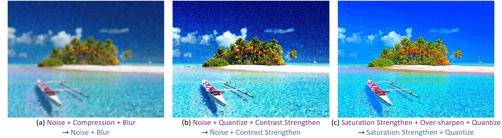
图 S2：当施加三种失真（紫色）时，人类通常最多只能识别出两种（蓝色）。
表 S4：失真识别任务的问题池与答案池。
| # | Question / Answer |
| 1 | Q: What are the primary degradation(s) observed in the evaluated image? |
| A: The primary degradation(s) in the evaluated image is/are {}. | |
| 2 | Q: What distortion(s) are most apparent in the evaluated image? |
| A: The most apparent distortion(s) in the evaluated image is/are {} | |
| 3 | Q: Identify the chief degradation(s) in the evaluated image. |
| A: The chief degradation(s) in the evaluated image is/are {}. | |
| 4 | Q: Pinpoint the foremost image quality issue(s) in the evaluated image. |
| A: The foremost image quality issue(s) is/are {}. | |
| 5 | Q: What distortion(s) stand out in the evaluated image? |
| A: The distortion(s) that stand out is/are {}. | |
| 6 | Q: What distortion(s) are most prominent in the evaluated image? |
| A: The most prominent distortion(s) is/are {}. | |
| 7 | Q: What critical quality degradation(s) are present in the evaluated image? |
| A: The critical quality degradation(s) presented is/are {}. | |
| 8 | Q: Highlight the most significant distortion(s) in the evaluated image. |
| A: The most significant distortion(s) in the evaluated image is/are {}. | |
| 9 | Q: What distortion(s) most detrimentally affect the overall quality of the evaluated image? |
| A: The distortion(s) that most detrimentally affect the overall quality is/are {}. | |
| 10 | Q: Determine the most impactful distortion(s) in the evaluated image. |
| A: The most impactful distortion(s) in the evaluated image is/are {}. | |
| 11 | Q: Identify the most notable distortion(s) in the evaluated image’s quality. |
| A: The most notable distortion(s) in the evaluated image’s quality is/are {}. | |
| 12 | Q: What distortion(s) most significantly affect the evaluated image? |
| A: The distortion(s) that most significantly affect the evaluated image is/are {}. | |
| 13 | Q: Determine the leading degradation(s) in the evaluated image. |
| A: The leading degradation(s) is/are {}. | |
| 14 | Q: What distortion(s) are most prominent when examining the evaluated image? |
| A: The most prominent distortion(s) is/are {}. | |
| 15 | Q: What distortion(s) are most evident in the evaluated image? |
| A: The most evident distortion(s) in the evaluated image is/are {}. | |
| 16 | Q: What quality degradation(s) are most apparent in the evaluated image? |
| A: The most apparent quality degradation(s) is/are {}. | |
| 17 | Q: In terms of image quality, what are the most glaring issue(s) with the evaluated image? |
| A: The most glaring issue(s) with the evaluated image is/are {}. | |
| 18 | Q: What are the foremost distortion(s) affecting the evaluated image’s quality? |
| A: The foremost distortion(s) affecting the evaluated image’s quality is/are {}. | |
| 19 | Q: Identify the most critical distortion(s) in the evaluated image. |
| A: The most critical distortion(s) is/are {}. | |
| 20 | Q: In the evaluated image, what distortion(s) are most detrimental to image quality? |
| A: In the evaluated image, {} is/are the most detrimental distortion(s) to image quality. | |
| 21 | Q: What are the most severe degradation(s) observed in the evaluated image? |
| A: The most severe degradation(s) is/are {}. | |
| 22 | Q: What are the leading distortion(s) in the evaluated image? |
| A: The leading distortion(s) in the evaluated image is/are {}. | |
| 23 | Q: What are the most critical image quality issue(s) in the evaluated image? |
| A: The most critical image quality issue(s) in the evaluated image is/are {}. | |
| 24 | Q: What distortion(s) most notably affect the clarity of the evaluated image? |
| A: The distortion(s) that most notably affect the clarity is/are {}. |
表 S5：评价推理任务的问题池。
| # | Question |
| 1 | Could you assess the overall quality of the image and elaborate on your evaluation? |
| 2 | How would you rate the image’s quality, and what factors contribute to your assessment? |
| 3 | Can you provide a detailed evaluation of the image’s quality? |
| 4 | Please evaluate the image’s quality and provide your reasons. |
| 5 | How do you perceive the quality of the image, and what aspects influence your judgment? |
| 6 | Offer an assessment of the image’s quality, highlighting any strengths or weaknesses. |
| 7 | What is your opinion on the quality of the image? Explain your viewpoint. |
| 8 | Assess the quality of the image with detailed reasons. |
| 9 | How does the image’s quality impact its overall effectiveness or appeal? |
| 10 | Evaluate the image’s quality and justify your evaluation. |
| 11 | How about the overall quality of the image, and why? |
| 12 | Provide a thorough evaluation of the image’s quality. |
| 13 | Examine the image’s quality by considering factors influencing its clarity. |
| 14 | Analyze the image’s quality, and detail your findings. |
| 15 | Provide a comprehensive assessment of the image’s quality, including both strengths and areas for improvement. |
| 16 | Assess the image’s quality from a professional standpoint. |
| 17 | Evaluate the image’s clarity and explain how it contributes to the overall quality. |
| 18 | How would you rate the overall quality of the image, and why? |
| 19 | What is your opinion on the image’s quality? Elaborate on your evaluation. |
| 20 | Evaluate the quality of the image and provide a comprehensive explanation. |
表 S6：即时评分任务的问题池与答案池。
| # | Question / Answer |
| 1 | Q: Which image do you believe has better overall quality: Image A or Image B? |
| A: I believe Image {} has better overall quality. | |
| 2 | Q: Determine which image exhibits higher quality between Image A and Image B. |
| A: In my assessment, Image {} exhibits higher quality. | |
| 3 | Q: Compare the general quality of Image A and Image B, and state your preference. |
| A: My preference leans towards Image {} to have better general quality. | |
| 4 | Q: In your opinion, which image demonstrates superior quality: Image A or Image B? |
| A: In my opinion, Image {} demonstrates superior quality. | |
| 5 | Q: Which of the two images, Image A or Image B, do you consider to be of better quality? |
| A: I consider Image {} to be of better quality. | |
| 6 | Q: Evaluate the quality of Image A and Image B, and decide which one is superior. |
| A: I conclude that Image {} is superior. | |
| 7 | Q: Between Image A and Image B, which image do you think has better quality overall? |
| A: I think Image {} has better quality overall. | |
| 8 | Q: Determine which image, Image A or Image B, you perceive to have better quality. |
| A: I determine that Image {} has better quality. | |
| 9 | Q: Assess the quality of Image A and Image B, and choose the one you believe is superior. |
| A: I choose Image {} to be superior in terms of quality. | |
| 10 | Q: Which image stands out to you as having better quality: Image A or Image B? |
| A: Image {} stands out as the superior choice in terms of quality. | |
| 11 | Q: Can you compare the quality of Image A and Image B and decide which one is better? |
| A: I find Image {} to be better after comparing the quality of both. | |
| 12 | Q: Decide which image, Image A or Image B, you think possesses higher quality. |
| A: I decide that Image {} possesses higher quality. | |
| 13 | Q: Evaluate Image A and Image B, and select the one that you feel has better quality. |
| A: Upon evaluation, I select Image {} as the one with better quality. | |
| 14 | Q: Which of the two images, Image A or Image B, appears to have superior quality to you? |
| A: To me, Image {} appears to have superior quality. | |
| 15 | Q: Compare the quality of Image A and Image B, and determine which one you prefer. |
| A: My preference leans towards Image {} after comparing the quality. | |
| 16 | Q: Make a judgment on which image, Image A or Image B, you consider to be of better quality. |
| A: I consider Image {} to be of better quality. | |
| 17 | Q: Between Image A and Image B, which image do you perceive to have better quality overall? |
| A: I perceive Image {} to have better quality overall. | |
| 18 | Q: Assess the quality of Image A and Image B, and indicate which one you find to be better. |
| A: I find Image {} emerges as the better option with superior quality. | |
| 19 | Q: Which image, Image A or Image B, do you think displays better quality when compared? |
| A: When compared, Image {} displays better quality. | |
| 20 | Q: Differentiate between Image A and Image B in terms of overall quality and decide which one is superior. |
| A: Image {} differentiates itself with superior quality. |
表 S7：比较推理任务的问题池。
| # | Question |
| 1 | Compare the overall quality of Image A with Image B and provide a comprehensive explanation. |
| 2 | Which image has better visual quality, Image A or Image B? Can you explain the comparison results? |
| 3 | Evaluate the general visual appeal and quality of both Image A and Image B, and elaborate on which one excels. |
| 4 | Discuss the overall impression and quality of Image A versus Image B, and justify your assessment. |
| 5 | Compare the overall quality between Image A and Image B, and justify your comparison results. |
| 6 | Assess the overall visual quality of Image A and Image B, discussing which one delivers a more compelling visual quality. |
| 7 | Which image demonstrates higher overall quality, Image A or Image B? Please provide detailed reasoning for your evaluation. |
| 8 | Analyze the overall quality of both Image A and Image B, and explain which image stands out. |
| 9 | Compare the perceived quality of Image A with Image B, providing insights into their respective strengths and weaknesses. |
| 10 | Discuss the visual quality of Image A and Image B, and elaborate on which one appears more appealing. |
| 11 | Can you evaluate the overall quality in both Image A and Image B, and explain which one is superior? |
| 12 | Compare the overall visual impact and impression of Image A versus Image B, and justify your assessment of their quality. |
| 13 | Which image exhibits higher overall quality: Image A or Image B? Please explain your reasoning. |
| 14 | Evaluate the visual quality in Image A and Image B, providing insights into their comparative strengths. |
| 15 | Compare the overall quality between Image A and Image B, and discuss which one appears more appealing. |
| 16 | Assess the visual quality of both Image A and Image B, and explain which one is better. |
| 17 | Which image demonstrates superior quality: Image A or Image B? Please elaborate on your evaluation. |
| 18 | Discuss the overall impression of Image A versus Image B, and justify your assessment of their comparative quality. |
| 19 | Compare the visual quality of Image A with Image B, providing detailed insights into their respective strengths and weaknesses. |
| 20 | Evaluate the overall quality of Image A and Image B, and explain which one has higher quality. |
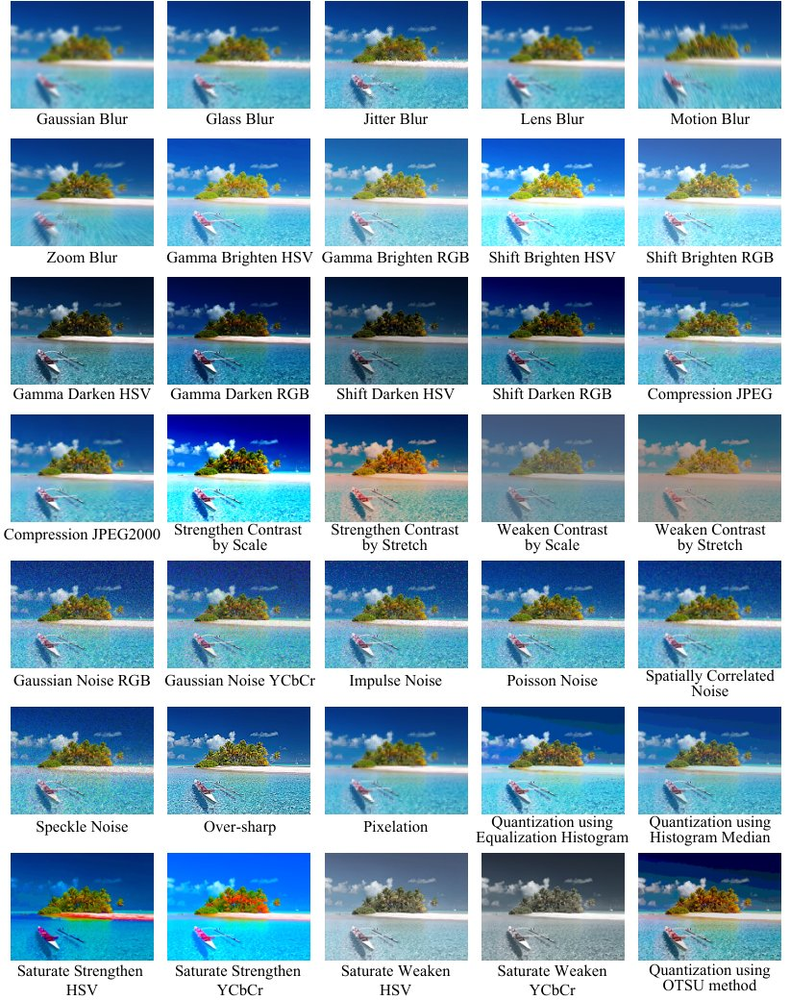
图 S3：我们失真设计的失真示例。我们为每种失真实现展示一个示例，参考图像见图 S1。
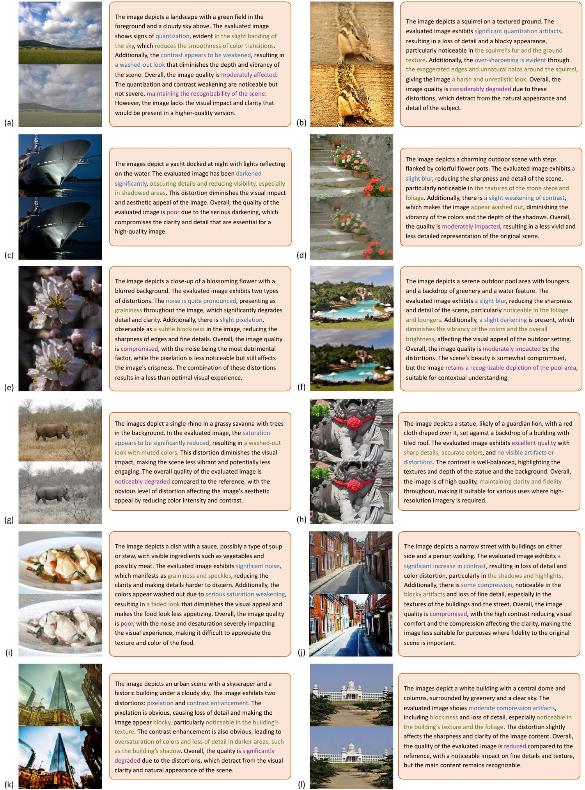
图 S4：全参考设定下评价推理任务的定性结果。自上而下的两张图像分别为参考图像与被评价图像。
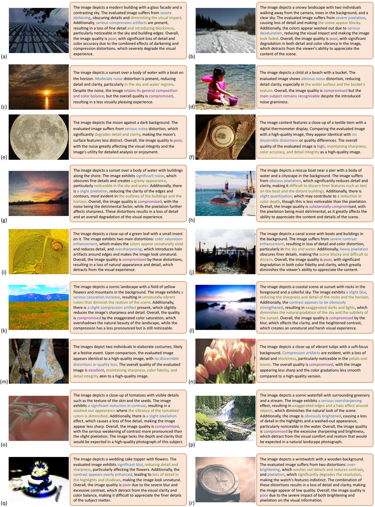
图 S5：无参考设定下评价推理任务的定性结果。
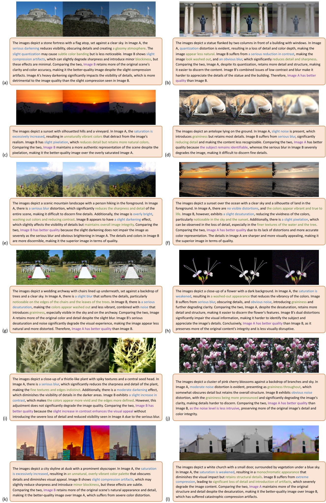
图 S6：全参考设定下比较推理任务的定性结果。从左至右的三张图像分别为参考图像、图像 A 与图像 B。
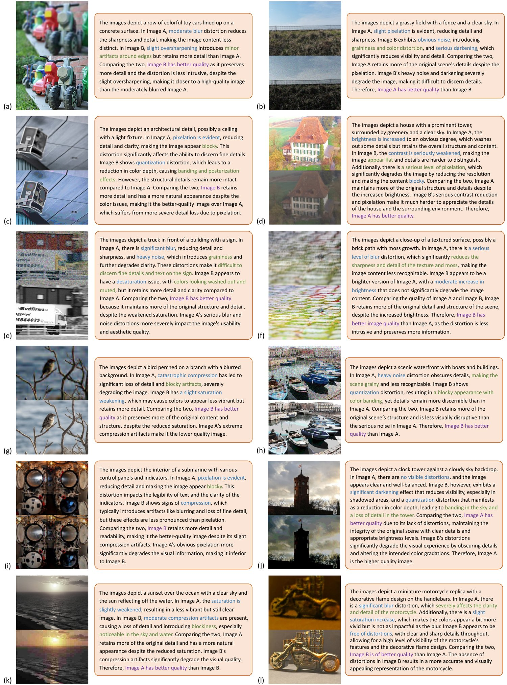
图 S7：无参考设定下比较推理任务的定性结果。自上而下的两张图像分别为图像 A 与图像 B。
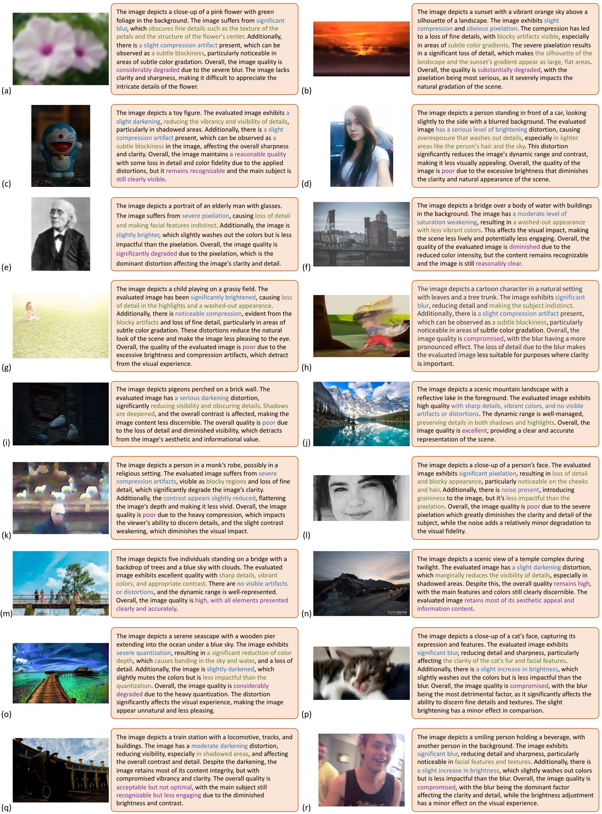
图 S8：评价网络下载图像的定性结果。